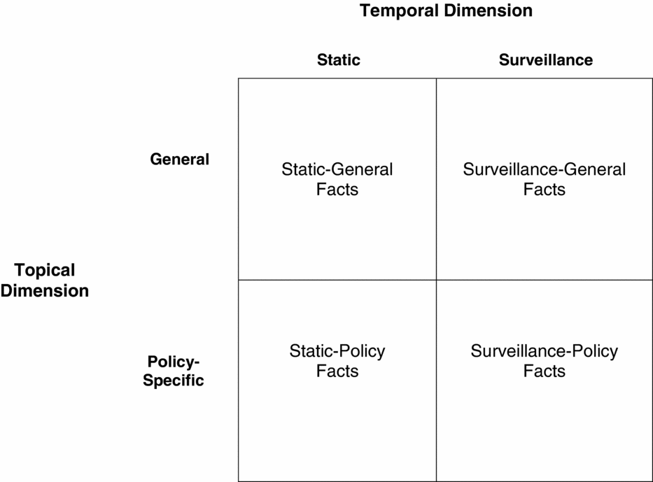
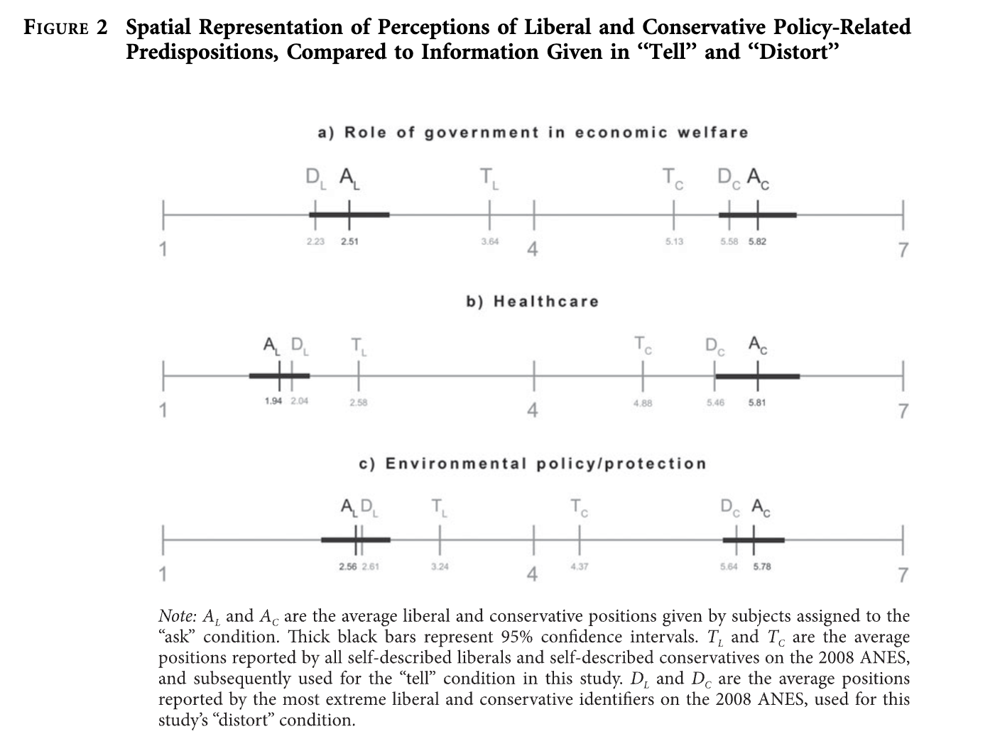
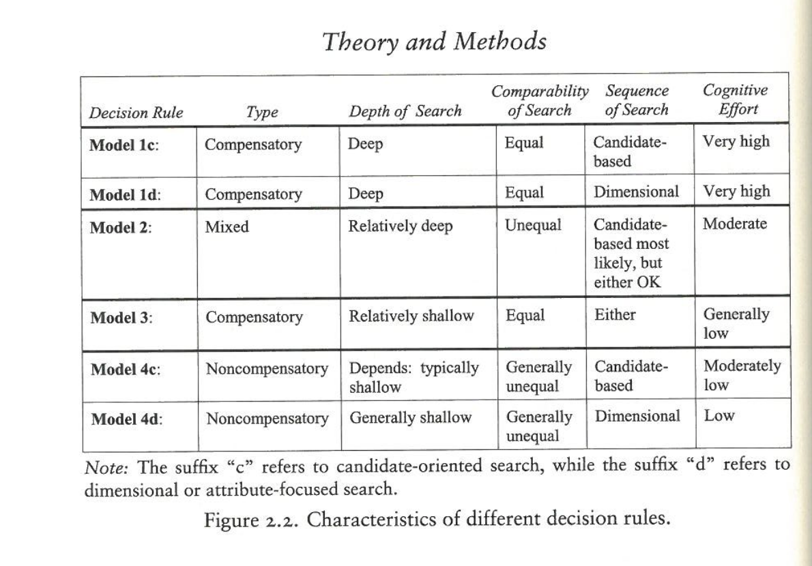

American Behavior
![]()
Week 1
Lecture Notes:
- write a reaction paper (300 words)
Essentials of Argument
Argument structure should guide response essays.
we are trying to convince readers we are competent and should be trusted.
starting with a problem and proposing a solution
always be thinking about audience.
just think about the parts of an argument when writing.
Five questions of argument:
what are you claiming?
what reasons do you have for believing your claim?
what evidence do you base those reasons on?
what principle connect?
TK.
design of an experiment is a warrant.
You can make concessions to dissenters
- “admittedly”, “some have claimed”.
Keep it simple, stupid “KISS”
Good warrants:
do readers know the warrant already?
will all readers think it is true?
Craft of Research (select portions)
Important to know your readers
know how political scientists write/read.
You have to know your readers to be able to write to them.
Motivation behind idea and potentially what data would be good for the project and what I would use.
- this is for the research design.
Making Good Arguments
There are claims and main claims
claims = any sentence that asserts something that may be true or false and so needs support.
main claim = the sentence (or more) that your whole report supports (aka thesis).
reason = a sentence that supporting a claim, main or not.
Evidence
something you and your readers can see, touch, taste, smell, or hear; accepted by everyone - a fact.
Where could I go to see your evidence?
Core of a research argument:
- Claim because of Reason based on Evidence
We dont accept a claim just because you back it up with your reasonsand your evidence
as a result, readers may question any part of your argument
Need to imagine readers objections!
Need to justify the connection between the reason and the claim.
this is the WARRANT!
- if you think readers won’t immedaitely see how a reason is relevant to your claim, then you justify the connection with a warrant, usually before you make it.
The five elements:
Claim
Reason
Warrant
Evidence
Acknowledgement and Response
Claim
vague claims lead to vague arguments
Write down your claim. Articulate it. Make it explicit. You can fix it later.
If the reverse of a claim seems self-evidently false, then most readers are unlikely to consider the original worth an argument.
If your claim is true…Why should I care?
arguments are more credible when you address its limitations.
every claim is subject to countless conditions.
- only address ones you expect readers to bring up.
Use hedges for claims.
- gives argument nuance.
Reasons and Evidence
Reasons outline the logic of your argument.
main claim > reason > subreason > evidence
we don’t base evidence on reasons
- we base reasons off of evidence
evidence is what readers accept as fact.
evidence or reports of evidence
- different things.
careful hedging your evidence
Need to explain evidence
Acknowledgements and Responses
The core of your argument is a claim backed by a reason based on evidence.
But you can’t only base your argument off your claims!
You need to anticipate questions readers may ask and respond accordingly.
be self-critical
Steps:
First, question your problem.
Second, question your support
focus first on evidence
Finally, readers may question the connection between your claim and reasons. Your reasons may be irrelevant of the claim.
Think of counterexamples
acknowledge them and explain why don’t consider them damaging to your argument.
can’t acknowledge everything. But can’t ignore everything.
Readers have to accept your definitions!
Goal: THICKEN your argument.
be careful with the word choice when you engage with acknowledgements
Warrants
The logical relevance of your response to your claims.
Readers can still accept your claim as true BUT they may not accept your claim if they think your reasons are irrelevant to it.
we offer warrants to connect a reason and a claim
Warrants are kind of like glue between reason and claim. They tell the reader why they should believe the reason/evidence should be used to support the claim.
Week 2: The Classics
Lecture Notes:
Question for Anand: why did you only assign those chapters of Downs? Isn’t the punchline of Downs that rational voters lead to median voter theorem and the parties being similar to appeal?
Lazarsfeld et al. is considered the Columbia school.
sociological school - Columbia
Rat choice - Downs
social-psychological
Campbell, Converse, Miller and Stokes. 1960. The American Voter. New York: Wiley. Chapters 1-2.*
Lecture Notes:
Question: voter competence?
Social-psychological model
- is there really a fight between social group importance with the Columbia school?
About voter decision making.
Michigan model - focused on mass public.
ANES data
Think Columbia school doesn’t have enough a priori hypothesis.
I need to read Zuckerman.
Design: Survey Based
kind of taking individuals out of context.
we need to move beyond community and think about psychological things.
The funnel of causality.
a way of trying to grapple with inputs.
political socialization is going on in the background
Theory: party identification is what comes out of this.
I personally do not see a massive difference between this and the Columbia.
Attitudinal model - Michigan - social/psych - party id model.
party id is an enduring psychological attachment!
Chapter 1: Setting
The activity of voting is as a means of reaching collective decisions from individual choices.
The voting behavior of a mass electorate can be seen within the context of a larger political system.
The empirical materials of our own work lie within a particular historical setting.
this research lies within a sequence of studies on voting.
The study of voting is also concerned with a fundamental process of political decision.
The political system can be idealized as a collection of processes for the taking of decisions.
will focus on just america and only the presidential election.
Contribution (as they outline):
first is the political impact of identification with social class.
second is the psychological determinants of voting preference.
Hypothesis: the partisan choice the individual voter makes depends in an immediate sense on the strength and direction of the elements comprising a field of psychological forces, where these elements are interpreted as attitudes toward the perceived objects of national politics.
data is over 3 presidential elections - 1948 - 1956.
Chapter 2:
Understanding versus prediction
- “we are concerned with prediction per se only as it serves to test our understanding of the sequence of events leading to the dependent behavior.”
There is a social and attitudinal model.
they use attitudinal model.
party identification is vital and acts as a filter.
everything else is secondary.
The use of political attitudes to predict voting behavior hinges upon this proximal mode of explanation.
Social model is more concerned with membership in social groups and their impact.
Doesn’t: social group -> party id -> vote decision?
Downs, Anthony. 1957. An Economic Theory of Democracy. New York: Harper. Chapters 1; 3.*
Lecture Notes:
Rational Choice approach.
Formal model.
Question: Why do people vote?
Question: How do people make decisions?
Questions: How do parties position themselves to win reelection? - we don’t really discuss this.
I need to read liberalism v. populism by Riker.
Goal-oriented actors.
we are thinking about Downs in terms of his assumptions
- the basic idea of rationality.
Anand doesn’t include the chapters on the interest groups/political parties.
Downs is filling out the scope of his argument conditions as the chapters move on.
Downs builds up the models with the assumptions. We make derivations from the model. Then we kind of start relaxing those assumptions and see how the predictions change.
Chapter 1:
Chapter 1 seems to be justifying why we should study government through a economic rationality and what that entails (assumptions, etc.)
Goal: We want to predict behavior! Economic rationality is a tool/lens to help us predict rational and irrational behavior.
As opposed to government’s impact on private decision making or the share of government in economic aggregates, Downs makes the point that government has not been successfully integrated with private decision-makers in a general equilibrium theory.
Thesis: Provide a behavior rule for democratic government.
- Provide such a rule by positing that democratic governments act rationally to maximize political support.
What is economic rationality?
A rational man is one who behaves:
1) always makes a decision
2) he ranks all alternatives in order of preferences.
3) preference ranking is transitive
4) always chooses that which ranks highest in his preference
5) always makes the same decision each time he is confronted with the same alternatives
these assumptions are applied to all the players: political parties, interest groups, and governments.
Rationality: refers to the process of action, not to their ends or even to their success at reaching desired ends.
Are inefficient men always irrational or can rational men also act inefficiently?
a mistaken rational man at least intends to strike an accurate balance between costs and returns; whereas an irrational man deliberately fails to do so.
rational man corrects mistake if known and the cost of eliminating it is smaller than the benefits therefrom.
if a man exhibits political behavior which does not help him attain his political goals efficiently, we feel justified in labeling him politically irrational, no matter how necessary to his psychic adjustments this behavior may be.
The Structure of the Model
Our model is based on the assumption that every government seeks to maximize political support.
periodic elections are held
primary goal is reelection
the election is the goal of those parties now out of power.
party that receives the most votes controls the entire government until the next election.
no intermediate votes
governing party has unlimited freedom of actions.
government cannot hamper the operations of other political entities. (or freedoms)
No economic limits to its power.
With these assumptions, we can construct a model showing how a rational government behaves in the kind of democratic state we outlined above.
There is uncertainty in our “world”.
- uncertainty = imperfect information.
“Thus our model could be described as a study of political rationality from an economic point of view. By comparing the picture of rational behavior which emerges from this study with what is known about actual political behavior, the reader should be able to draw some interesting conclusions about the operation of democratic politics.”
The Relation of our Model to Previous Economic Models of Government
This is kind of the warrant section for the article? Why do we need a new model? What do others do and why are they insufficient?
Previous models are normative.
Downs model is positive. - deductive
Downs discusses previous models, mainly focusing on Buchanan-Samuelson approach
Samuelson posits two mutually exclusive ways to view decision making by the state:
1) consider the state a separate person with its own ends not necessarily related to the ends of the individuals
- Downs disagree with this
2) only individuals as having end structures. The state has no welfare function of its own; it is merely a means by which individuals can satisfy some of their wants collectively.
Downs thinks this is partly true.
- the individualistic view is incomplete because it doesn’t take coalitions into consideration.
Problem: discovering a relationship between the ends of individuals at large and the ends of the coalition which does not restrict government to providing indivisible benefits. p.17
Our model attempts to forge a positive relationship between individual and social end structures by means of a political device.
in our model, government pursues its goal under three considerations:
a democratic political structure which allows opposition parties to exist
an atmosphere of varing degrees of uncertainty,,
and an electorate of rational voters.
We wish to discover what form of political behavior is a rational for the government and citizens of a democracy.
Chapter 2: Party Motivation and the Function of Government in Society
Theoretical models should be tested primarily by the accuracy of their predictions rather than by the reality of their assumptions.
- interesting general point.
Anand just provides one page of chapter 2 lol
Chapter 3: The Basic Logic of Voting
In order to plan its policies so as to gain votes, the government must discover some relationship between what it does and how citizens vote.
This is derived from the axiom that citizens act rationally in politics!!!!!!!!!!!!!!!
This implies that each citizen casts his vote for the party he believes will provide him with more benefits than any other.
Need to show what rational voting implies.
Utility Income From Government Activities
Utility is a measure of benefits in a citizen’s mind which he uses to decide among alternative courses of action.
- a rational man always takes the one which yields him the highest utility.
Citizens are utility maximizers.
Government activity provides a utility income to citizens.
includes benefits they know and do not know they are receiving.
- however, only benefits which voters become conscious of by election day can influence their voting decisions; otherwise their behavior would be irrational.
The Logical Structure of the Voting Act
Terminology of the analysis:
unit of time: election period.
- time elapsed between elections.
The Two Party Differentials:
each voter votes for the party they believe will provide him with a higher utility income than any other party during the coming election period.
- to find this, they compare the utility incomes they believe they would receive from each party.
\[E(U^A_{t+1}) - E(U^B_{t+1})\]
this is the expected party differential
if positive: vote incumbent
if negative: vote opposition
if zero: abstain.
A rational voter bases their view of the future off the past/present.
thus what is most important is the CURRENT party differential.
- utility the individual earned from the party at time \(t\)
The Trend Factor and Performance Ratings:
Trend factor: the adjustment each citizen makes in his current party differential to account for any relative trend in events that occurs within the current election period.
When the individual cannot see any difference between the two parties running
to escape this, they alter their decision to whether or not the incumbents have done as good a job governing as did their predecessors in office.
- reminds me of a nature of the times voter in some fashion.
Rational men are not interested in policies but in their own utility incomes.
Performance ratings become a thing when the individual things the parties are the same.
Preliminary Difficulties Caused By Uncertainty
The world doesn’t have complete and costless information
- there is uncertainty!
Individual can only estimate their utility income.
They will base them upon those few areas of government activity where the difference between parties is great enough to impress them.
Downs excludes deliberate misinformation/disinformation.
Downs assumes political tastes are fixed and only new information can change their mind.
Variations in Multiparty System
same thing applies only the individual compares the incumbent against multiple parties.
However, a rational voter not may vote for their preference because they another party may have a better chance of winning.
An important part of voting is predicting how other citizens will vote by estimating their preferences.
Lazarsfeld et al. 1944. The People’s Choice. Prefaces; Chapters 1-3; 6.*
Lecture Notes:
Community study.
panel study - changes over time.
A contained social setting by rooting the study in Erie.
Design: Survey/community
- Designed to see how people change between the elections.
Question: How do attitudes form? Do campaigns actually work? Social group influence? Context!?
- How do we situate individuals in context?
Politics has gotten nationalized today - which is different from Lazarsfeld time.
They are going to look at social groups and the salience of social groups.
- think about the different variables.
you can see the origin of identity politics in this reading.
How they set this up is a good way to set up your papers and the further complicate the story.
Theory contribution: the role of cross-pressures.
- sociological
Columbia is social approach
- big contribution is cross-pressure.
Michigan is social psychological
Why does this matter?
- the parties are becoming a social identity.
Social groups and party id is the same. - liliana mason
- this is the difference today.
academic ambivalence - it is struggling between competing considerations
- it does not mean indifferent!
This work is important because it establishes political communication, information flow, media effects,
- they did not find a big influence of radio and newspaper on vote choice.
Preface:
The People’s Choice is focused on the formation, change, and development of public opinion.
- how do attitudes form?
the role of turnover in the election. turnover represents opinion/behavior is unstable (if large).
Lazarsfeld et al. asks some interesting rhetorical questions:
What types of events show a small or large turnover as they develop?
Does the turnover tend to become smaller as the events run their course?
At what point is a minimum turnover reached and what is likely to increase it again?
Under what conditions do we have a balanced turnover, as in this case, where the changes in various directions seem to cancel each other?
- all of these kind of remind me of Gelman & King’s article on polls/elections/campaigns.
Turnover is the result of changes which come about in the intentions, expectations, and behavior of individual persons.
Three questions arise
What kind of people are likely to shift?
Under what influences do these shifts come about?
In what directions are the shifts made?
“In the present study, face-to-face contacts turned out to be the most important influences stimulating opinion change.
- “The discovery of the conditions under which attitudes or modes of behavior are particularly accessible to personal influence, the classification of types of personal influence most effective in modifying opinion, the examination of situations in which the more formal influences of mass media seem to produce change, all these are typical problems for what we have called dynamic social research.” xxvi
xxvi is very interesting overview. Definitely come back here.
“We thus came to the conclusion that party changes are in the direction of greater consistency and homogeneity within subgroups. p.139”
Making an argument that in 1944, there was greater democratic machinery in Erie, causing more to side with democrats as opposed to 1940 which saw more side with republicans when their machinery was stronger.
FUTURE STONE: XXXII -XXXIII YOU NEED TO READ AGAIN AND AGAIN AND AGAIN. IT IS INCREDIBLY SUCCINT.
- discussion about cross-pressure, information gathering, social bridging, etc.
individuals who experienced cross-pressures took considerably longer to arrive at a definite vote decision.
“In the present study we found that one of the functions of opinion leaders is to mediate between the mass media and other people in their groups. It is commonly assumed that individuals obtain their information directly from newspapers, radio, and other media. Our findings, however, did not bear this out. The majority of people acquired much of their information and many of their ideas through personal contacts with the opinion leaders in their groups. These latter individuals, in turn, exposed themselves relatively more than others to the mass media.
Chapter 1:
Goal: Discover how and why people decide to vote as they did.
- What were the major influences upon them during the campaign of 1940?
Focus: development of an individuals vote during the campaign.
- this is going to bring up additional questions about attitude formation more broadly.
Data: Panel data - this is new at the time.
Survey data: individuals living in Erie county, Ohio 1940/1944.
600 people - stratified sampling.
they were aware of interview frequency biasing results! back in 1940?!
would have liked the poll to have an extra month before the conventions.
different panels with different frequency of interviews.
Chapter 2:
Describes the county of Erie.
goal is to know why people voted the way they did.
Sandusky - church was a major factor in life.
mixed industrial and agriculture type.
labor as a political bloc was not very strong.
Not a lot of solidarity among the ethnic groups within the county,
1940 - republican campaign was more organized in the county than democrats,.
proceeds to list important local, national, and international events for each half of the month.
- This is interesting and I think works because the information flow is so much less than what we have now.
Chapter 6: Time of Final Decision
Why do people decide who to vote for at different times?
Delayed decision - had less interest in the election
those who made their choice late - subject to more cross-pressures.
more interest = the sooner they decide who to vote for.
- they were also more likely to express anxiety.
this all is very similar to Campbell.
Those who decide late were also less concerned about the ramifications of the election and who won.
What cross-pressure will win out? That is which has more influence - religion or socio-economic status?
The different cross-pressures analyzed:
Religion and SES level
Occupation and Identification
1936 and 1940 Vote
The voter and his family
the voter and his associates
1940 Vote Intention and attitude Toward Business and Government
Why did people subject to cross-pressures delay their final decisions as to how they should vote?
the single biggest factor in delaying vote was the lack of complete agreement within the family.
second, some are waiting for “events” to resolve the conflicting pressures
I wonder how this squares with Gelman & King
- need to revisit that.
“We will recall that the people who make up their minds last are those who think the election will affect them least.” p.61
“Our hypothesis that the person or the party that convinces the hesitant voter of the importance of the election to him personally-in terms of what he concretely wants-can have his vote.” p.61
- we know from previous lit that, the voter might not know concretely what they want.
As the number of cross-pressures increases, the degree of interest shows a steady decline.
this is interesting. I wonder why this is.
maybe cross-pressures make it harder for the individual to realize the “fundamentals”.
Week 3: Political Knowledge
Lecture Notes:
The readings are all wrestling between the effect of individual level features and/or environmental levels on political knowledge acquisition.
If you critique all readings - make sure you broaden the claim.
Main Question: Does the public have enough knowledge?
Main Question: What do we mean when we say a “knowledgeable public”?
What does the public know?
facts?
who is in government?
current events
processing/synthesizing info.
- critical thinking skills.
Knowledge -> participation
Access to information to have knowledge.
Quality of information -> Decisions?
Mondak likes jazz. Also read for the “don’t know” argument.
If the public is dumb, what might save them?
Heuristics!
- but also bias and a mixed bag.
Correct voting. Does your vote match your preferences.
political knowledge = factual things - timeless/timely
political sophistication: combo of interest and awareness - zaller invention - interest + factual knowledge. kinda an index measure.
Simple to heterogeneity
vairation in question types
different variation in person types of who can get knowledge
personality/dispositions effect knowledge.
Barabas, Jason, Jennifer Jerit, William Pollock, and Carlisle Rainey. 2014. “The Question(s) of Political Knowledge.” American Political Science Review. 108:840-855.
Lecture Notes:
survey issues with political knowledge questions.
building into their model that some knowledge model questions are different than others and more difficult.
- not all tasks are equal.
multilevel modeling
- allow certain parameters to vary across question types.
dangerous to talk about knowledge in monolithic terms.
Abstract:
Political knowledge is a central concept in the study of public opinion and political behavior. Yet what the field collectively believes about this construct is based on dozens of studies using different indicators of knowledge. We identify two theoretically relevant dimensions: a temporal dimension that corresponds to the time when a fact was established and a topical dimension that relates to whether the fact is policy-specific or general. The resulting typology yields four types of knowledge questions. In an analysis of more than 300 knowledge items from late in the first decade of the 2000s, we examine whether classic findings regarding the predictors of knowledge withstand differences across types of questions. In the case of education and the mass media, the mechanisms for becoming informed operate differently across question types. However, differences in the levels of knowledge between men and women are robust, reinforcing the importance of including gender-relevant items in knowledge batteries.
Bumper Sticker:
- Political knowledge is not as simple as we think.
Research Question:
What determines who is informed?
How does the temporal dimension relate to knowledge acquisition
Hypothesis:
Levels of knowledge for recent facts should be lower relative to facts that were established years or decades ago because there have been fewer opportunities for people to acquire such facts.
We expect that level of education will have a stronger (and more positive) relationship to general measures of political knowledge than it does to policy-specific knowledge.
We hypothesize that the effect of mass media on knowledge varies along the temporal dimension on figure 1.
- we expect to observe a positive relationship between the amount of media coverage and surveillance facts, but little or no relationship between the level of media coverage and static facts.
The knowledge gap between men and women will be smaller for gendered questions compared with nongendered questions in each of the four cells.
Background:

The present study provides a framework for understanding how the content or type of question affects observed levels of knowledge.
Political Knowledge - Delli Carpini & Keeter’s definition - “The range of factual information about politics that is stored in long-term memory.
How does this differ from political sophistication?
- keep this in mind.
3 factors:
ability
opportunity
motivations
How is a fact learned?
first factor: how recently the fact came into being
second factor: the type of fact - whether the question has to do with public policy concerns or the institutions and people/players of government (topical dimension).
General v. policy
General - questions ask about the institutions and people/players of government
- Carpini and Keeter emphasize the importance of general.
Policy-specific - whether the question has to do with public policy concerns
Gilens strong advocate
- “many people who are fully informed in terms of general political knowledge are nonetheless ignorant of policy-specific information that would alter their political judgments.”
policy specific is more domain-specific than general
thus harder to acquire.
- thus need greater motivation to acquire that information.
What We Know About Political Knowledge:
Ability - level of education
Education was the “strongest single predictor of knowledge”
education has a direct effect on political knowledge and an indirect effect through political engagement and structural factoprs such as occupation and income.
most schools teach about institutions and processes of government.
- empirical analysis mostly looks at general political knoweldge.
we expect that level education will have a stronger (and more positive) relationship to general measures of political knowledge than it does to policy specific knowledge
Opportunity - the amount of news coverage
more information available.
Delli Carpini, Keeter, and Kennamer find that people living close to the capitol are more knowledgeable about state politics than those living farther away.
- interesting! Is this a media story though? Or is this a geographical/physical interaction story?
The level of political knowledge increases as information about particular topics becomes more plentiful
there is an assumption here, that this information is “correct”.
are we testing solely on events?
Motivation - self- or group-interest
gender gap in political knowledge.
why?
might be because of the question we ask.
women have much great knowledge when the question has direct relevance to women as a group.
mechanism: women have higher levels of knowledge on “Gendered” questions as a result of the instrumental benefits of learning particular facts.
Data and Methods:
Original dataset
lots of observations (tens of thousands)
surveys were augmented with media content data and other controls.
Depedent Variable: Knowledge
Pew research and Roper archives for surveys about knowledge in the later half of the 2000s
questions about public policy, people in office, etc.
Independent Variables: Question and Environmental level indicators
Each knowledge question was coded for the two question-level characteristics appearing in fig 1. (surveillance vs. static and policy-specific vs. general).
temporal dimension: when the even occured - when the fact became established.
- when the person took office. When the bill passed. Last measure of unemployment prior to the question being asked in the survey.
surveillance facts were treated as those in which the correct answer was established 100 days prior to survey. all other questions were coded as static.
43% surveillance and 57% static
Questions haveing to do with institutions of gov or people and players were coded as zero
- domestic policies, actions by congress, or foreign policy topics = 1
To examine the effect of mass media on knowledge, we characterized the info environment for each topic.
Use the Pew Research News Coverage Index (NCI) project.
provides a broad snapshot of which stories are being reported in the media at a given time and by who.
- The media coverage variable is the NCI count of stories concerning a given knowledge question extending six weeks back in time. Thus, for a question asking which office Hillary Clinton holds in the beginning of June 2010, we counted NCI stories having to do with Hillary Clinton from roughly the middle of April until the field date of the survey. The six-week cutoff, though somewhat arbitrary, ensures that potential learning effects of current coverage are not misidentified due to less relevant levels of coverage in the past.
Also have individual level indicators
edu range from 1 (least) to 8 (most)
income
age
gender
race
partisanship
they used multiple imputation and averaged.
Result:
unit of analysis: a person’s response to a knowledge question.
logit model - outcome : which is the probability that individual i answers question j correctly.
- a function of individual-level and question-level characteristics.
use random effects because to account for question clustering given by the same individual in survey questions.
They use fixed effects for certain \(\beta_j\) which is income, age, black, democrat, and republican
\(n_j\) represent question level random effects - which allow the effect of gender and education to vary across questions.
\(a_i\) signifies an individual level random intercept (interpreted as the variation in individuals political knowledge)
- I thought this is our DV???????
\[ Pr(y_{ij}=1)=logit^{-1}(a_i+n^{cons}_j +n^{edu}_jEducation_i + n^{fem}_jFemale_i+\beta_{inc}Income_i+\beta_{age}Age_i+\beta_{black}Black_i+\beta_{dem}Democrat_i+\beta_{rep}Republican_i) \]
First difference: represents how the probability of a correct answer changes as an explanatory variable moves from one substantively meaningful value to another.
The Effect of Education:
increasing education has a higher effect for general facts rather than for policy facts.
probability of getting the correct answer to a static-general knowldge question increases with education. This is bigger than static policy question
people with the most education remain ignorant of certain policy facts.
“Level of education is positively related to knowledge in all four quadrants, but there are statistically significant differences in the strength of that relationship, precisely in the manner we expect.”
Learning from Media Coverage:
recall the second hypothesis: the positive relationship between news coverage and knowledge stablished by previous studies will be largely confined to surveillance facts.
more news -> more knowledge of surveillance facts.
more news not equal to more knowledge of static facts.
Observe a large effect from a low to high media environment on surveillance-general facts is large.
Observe a null effect on surveillance-policy facts.
The Gender Gap
- smaller knowledge gap between genders on gendered questions.
Discussion:
Education does not confer the same benefits across different types of questions.
Mass media effect is largely confined to recent facts.
gender knowledge gap is smaller when questions are gendered.
We should include knowledge questions along with the standard set of demographic items in all opinion survey.
Bartels, Larry. 2007. “Homer Gets a Warm Hug: A Note on Ignorance and Extenuation.” Perspectives on Politics. 5(4): 785-790.
Lecture Notes:
- Bartels says voters are misguided and ignorant.
Abstract:
Lupia, Levine, Menning, and Sin show that well-informed Republicans and conservatives were highly supportive of the 2001 Bush tax cut. They mistakenly infer that this fact invalidates my claim in “Homer Gets a Tax Cut” that “the strong plurality support” for the tax cut was “entirely attributable to simple ignorance.” Their analysis, like mine, implies that a fully-informed public would have been lukewarm, at best, toward the tax cut. They have little to say about why this is the case, beyond insisting that “citizens have reasons for the opinions they have.” I suggest that citizens’ “reasons” are sometimes misleading, misinformed, or substantively irrational, and that social science should not be limited to “attempts to better fit our analyses into their rationales.”
Background:
Bartels wrote “Homer Gets a Tax Cut”.
Lupia, Levine, Menning, and Sin write an article where they disagree with the findings. They claim Bartels’ makes an improper assumption.
- Liberals with more info did not support tax cuts while Rep with more info increased support of tax cuts.
Debate about information effects on republicans/conservatives supporting Bush tax cuts.
According to Lupia, Levine, Menning, and Sin, more informed republicans were roughly similar to less informed republicans on their views of tax cuts.
- they found more informed dems v. less informed dems had a higher divergence.
NES 2002 is not as reliable as other years. It was kinda bad this year.
I certainly agree with Lupia, Levine, Menning, and Sin’s key claim that political information may have different effects on different people.
Debate:
Bartels agrees with Lupia et al.’s claim that political information may have different effects on different people
They disagree on the “implications of this heterogeneity for my conclusions about the bases of support for the Bush tax cut.”
this is a mouthful.
- they disagree over the conclusions about what Bartels has to say about people who support the Tax cut.
“The fact that ideological and partisan disagreements about the tax cut only emerged clearly among relatively well-informed people will come as no surprise”
I think he is basically saying that this is obvious and this is what Zaller shows.
- THIS IS THE KEY POINT: “IN THE CASE OF THE BUSH TAX CUT, HOWEVER, UNINFORMED CITIZENS REGARDLESS OF THEIR POLITICAL VALUES WERE VERY LIKELY TO SUPPORT THE POLICY-IF THEY TOOK ANY POSITION AT ALL.
Much of Lupia, Levine, Menning, and Sin’s critique focuses on my claim that “the strong plurality support for Bush’s tax cut … is entirely attributable to simple ignorance.”
It does suggest that a fully-informed citizenry would have been lukewarm toward the tax cut, at best. Is that fact relevant to understanding
Bartels examines a variety of potential bases of public support for the Bush tax cut
Bartels argues they basically paraphrase his same argument.
Their analysis, like mine, implies that a fully-informed public would have been lukewarm, at best, toward the tax cut. They have little to say about why this is the case, beyond insisting that “citizens have reasons for the opinions they have.” I suggest that citizens’ “reasons” are sometimes misleading, misinformed, or substantively irrational, and that social science should not be limited to “attempts to better fit our analyses into their rationales.”
Lupia et al. unsubtle effort to, quite literally, change the subject is in service of a broader goal: rationalizing every political thinking and behavior.
the heart of their argument is that “citizens have reasons for the opinions they have”, and that we as social scientists should “conduct scholarship that attempts to better fit our analyses into their rationales.”
Bartels agrees we need to understand people’s rational. HOWEVER:
he seems to be arguing that these authors are making the point that all citizens can rationalize the opinions they have.
it is this that he disagrees with:
- “However, decades of psychological research have amply demonstrated that people’s subjective understandings of their own behavior are often incomplete, predictably biased, and sometimes highly misleading.
This does not mean well-informed people should always be considered substantively rational.
Here, as in many other instances, better-informed people seem mostly to have grasped the biased world-view of “their” political elites rather than an accurate perception of real social conditions
- YES I AGREE!
Delli Carpini, M. and S. Keeter. 1996. What American Know about Politics and Why it Matters. New Haven: Yale University Press. Chapters 2-4*(skim)
we don’t really know what people know - thus we get this book
big debate about whether we should give “don’t know” options.
Chapter 2:
How much info does the American public have on politics is like the biggest question.
people ought to know the structure of government and its basic elements.
“The democratic citizen is expected to be well-informed about political affairs. He is supposed to know what the issues are, what their history, what the relevant facts are, what alternatives are proposed, what the party stands for, what the consequences are.”
- lol
Three broad areas of political knowledge:
the rules of the game
the substance of politics
people and parties.
“None of this relieves citizens of their individual responsibility to be informed, but it suggests that an informed citizenry requires not only will, but also opportunity.”
- interesting point.
Chapter 3: Stability and Change in Political Knowledge
Ability, motivation, opportunity.
Tension between looking to the past and looking to the future.
Americans are essentially no more nor less informed about politics than they were fifty years ago.
we should expect more edu -> civic ability and understanding
- this isn’t necessarily true.
For Neil Postman, the dominance of television as the central form of public discourse has reduced teaching to “an amusing activity,” as children and young adults increasingly demand to be entertained rather than education (1985)
- like this quote. Certainly has gotten worse!
Decline in education related to the progressive movement?
they say we don’t emphasize the accumulation of facts enough?
- I need to dig into this a bit more. Not sure how i feel.
education teaches you how to acquire info and provides substantive info.
workplace is important too
“perhaps the greatest opportunity to learn about politics is provided by the mass media.”
“The greatest contribution of electronic media to democracy should occur in the widespread distribution of public-affairs information to citizens. In a sense, most of the provisions under which media operate in democratic societies are intended to achieve this fundamental goal…”
lol.
And Barber argues that “the capabilities of the new technology can be used to strengthen civic education, guarantee equal access to information, and tie individuals and institutions into networks that will make real participatory discussion and debate possible across great distances”
- LOL
“Henry David Thoreau’s Walden:”We are in great haste to construct a magnetic telegraph from Maine to Texas; but Maine and Texas, it may be, have nothing important to communicate….”
Postman and others also argue that electronic media are unsuited for the kind of rational argumentation and deliberation required in democratic discourse
YES!
p.113
read it.
- “A related concern is that the seductive nature of television —the ease with which it can be watched, its entertaining and visually arresting format—is driving citizens away from newspapers and magazines, while at the same time forcing the print media to compete by turning to shorter, less demanding stories and the use of such techniques as color graphics.
Perhaps the greater nationalization of politics is because citizens are increasingly motivated to follow national politics - creating a cycle.
Chapter 4:
“For example, whereas partisans are more informed than nonpartisans, strong republicans are significant more informed than are strong Democrats.”
the survey was in 1989
I wonder if timing has to do with this.
There is a connection between interest and knowledge that is going untested
I wonder if Democrats decrease in their political interest when they are in control
Republicans subsequently may increase their political attention/interest when the outparty is in office
- Taber and Lodge argument being made here.
“Political learning is affected not only by individual factors, such as one’s interest in politics, but also-and often profoundly- by forces external to the individual: the information environment and more, generally, the political context in which learning occurs.”
Lau, Richard P., and David P. Redlawsk. 2001. “Advantages and Disadvantages of Cognitive Heuristics in Political Decision Making.” AJPS . 45:951-71.
Abstract:
This article challenges the often untested assumption that cognitive “heuristics” improve the decisionmaking abilities of everyday voters. The potential benefits and costs of five common political heuristics are discussed. A new dynamic processtracing methodology is employed to directly observe the use of these five heuristics by voters in a mock presidential election campaign. We find that cognitive heuristics are at times employed by almost all voters and that they are particularly likely to be used when the choice situation facing voters is complex. A hypothesized interaction between political sophistication and heuristic use on the quality of decision making is obtained across several different experiments, however. As predicted, heuristic use generally increases the probability of a correct vote by political experts but decreases the probability of a correct vote by novices. A situation in which experts can be led astray by heuristic use is also illustrated. Discussion focuses on the implications of these findings for strategies to increase input from under-represented groups into the political process.
Research Question:
What are the individual and contextual determinants of heuristic use?
Does the use of heuristics affect (without prejudging whether it improves or hinders) the quality of political decision making
Five Political Heuristic:
Party affiliation
candidate’s ideology
Endorsements
polls
- provide “viability” info
Candidate appearance
- Dukakis in the tank.
Hypothesis:
we hypothesize that the use of cognitive heuristics generally will be associated with higher quality decisions
we expect heuristic use to be most efficacious for political experts
the use of cognitive heuristics will interact with political sophistication to predict higher quality decisions
Method:
- scrolling for info.
Lupia, Arthur et al. 2007. “Were Bush Tax Supporters ‘Simply Ignorant?’ A Second Look at Conservatives and Liberals in ‘Homer Gets a Tax Cut.”’ Perspectives on Politics. 5(4): 773-784.
Abstract:
In a recent issue of Perspectives on Politics, Larry Bartels examines the high levels of support for tax cuts signed into law by President Bush in 2001. In so doing, he characterizes the opinions of “ordinary people” as lacking “a moral basis” and as being based on “simple-minded and sometimes misguided considerations of self interest.” He concludes that “the strong plurality support for Bush’s tax cut … is entirely attributable to simple ignorance.”
Our analysis of the same data reveals different results. We show that for a large and politically relevant class of respondents, conservatives and Republicans, rising information levels increase support for the tax cuts. In fact, Republican respondents rated “most informed” supported the tax cuts at extraordinarily high levels (over 96 percent). For these citizens, Bartels’ claim that “better-informed respondents were much more likely to express negative views about the 2001 tax cut” is untrue. Bartels’ results depend on the strong assumption that if more information about the tax cut makes liberals less likely to support it, then conservatives must follow suit. Our analysis allows groups to process information in different ways and can better help political entrepreneurs better reconcile critical social needs with citizens’ desires.
Question:
How does information acquisition (and to what level) influence support/opposition to policies?
Are voters stupid? RE: Bartels
Bartels Argument:
Bartels claims that “better-informed respondents were much more likely to express negative views about the 2001 tax cut”
He argues that if Americans had been more enlightened, greater numbers would have opposed the cuts.
Bartels characterizes the opinions of “ordinary people” as being superficial and based on “simple-minded and sometimes misguided considerations of self-interest.”
“Finally, and most importantly, better-informed respondents were much more likely to express negative views about the 2001 tax cut…If we take this crossectional difference in views as indicative of the effect of information on political preferences, it appears that the strong plurality for Bush’s tax cut…is entirely attributable to simple ignorance.”
Week 4: Ideology/Sophistication
Lecture Notes:
The broad question (in my POV) is about if, when, and why do people have constraints on their belief system
- this is the throughline (so far).
we are seeing a pattern through all this research on the masses.
the most sophisticated at every level are influenced the most in general.
they use heuristics better
they are more interested
more constraints
more active
etc.
- nothing seems to move the bottom of the masses.
What moves the lower strata politically
what does the lower strata even think?
what brings them into the political process.
Are voters making right decisions?
- do they know what they are doing?
Thinking about top-down elite info transfer.
tourangeau et al. is good.
executive functioning(?)
Opinions: verbal expression of an attitude
attitude: an enduring predisposition to respond
- opinions are imperfect indicators of underlying, unobserved attitudes.
Experiment:
randomization
can control the IV
Achen, C.H. 1975. “Mass Political Attitudes and the Survey Response.” American Political Science Review. 69: 1218-31.
Abstract:
Students of public opinion research have argued that voters show very little consistency and structure in their political attitudes. A model of the survey response is proposed which takes account of the vagueness in opinion survey questions and in response categories. When estimates are made of this vagueness or “measurement error” and the estimates applied to the principal previous study, nearly all the inconsistency is shown to be the result of the vagueness of the questions rather than of any failure by the respondents.
Bumper Sticker:
Survey design can lead to different results!
Also, Converse missed some important methods considerations.
Research Question:
- What are possible sources for why there is weak correlation among citizens’ political survey responses?
Background/Theory:
“There can be little doubt that the sophisticated electorates postulated by some of the more enthusiastic democratic theorists do not exist, even in the best educated modern societies”
Beliefs may be best expressed on a continuum.
We use likert scales but these are discrete representations of a continuous preference.
As a result, it is unsurprising this leads to respondents appear to be inconsistent in their beliefs.
We usually just chalk this up as measurement error
Achen: “…it reflects a flaw in the survey research method rather than in responses of subjects.”
- He argues Converse did not contend with these issues and thus underestimates voters’ attitudinal stability.
There are two theories about instability in respondents political survey questions:
1) voters actually have instability in their opinions/belief system.
- This is Converse’s argument
2) low reliabilities of opinion survey question
- This is Achen’s argument contribution.
BIG ISSUE FOR ACHEN: the vagueness of the questions asked.
Data/Method:
Converse’s data
1132 respondents
“When a voter is stable in his views and all observed variability is measurement error, correlations will be equal across time periods. At the other extreme, when a voter is unstable and there is no measurement error, correlations should become smaller at a predictable rate as time periods become more distant from each other.”
Basically:
smaller correlations between periods means genuine changes in belief.
- time 1 should NOT have more predictive power than time 2 for time 3
consistent beliefs means that time 1 or time 2 should not be better than the other at predicting time 3.
- correlation is equal across time periods!
I am a bit confused by the model - \(p_t\) represents the actual opinion at time t of the respondent. But we cannot know this? We only have the observed opinion represented at \(x_t\)
Results:
Voters’ beliefs are a bit more stable than we thought
- this does not mean voters have more wisdom.
This article says nothing about a voter’s sophistication
- only that there beliefs are a bit more stable than what Converse initially articulated.
“Here the problem with the weak original correlations is demonstrated to lie, not with the variability of respondents, but rather with the fuzziness of the questions and with other errors of measurement.”
This only works for panel data I think.
The simplicity of questions and the fact that respondents might have preferneces on a continuum that don’t perfectly map onto the likert scale categories that might be driving this “measurement error.”
Need to figure this out.
how does the question get interpreted by different individual factors?
measurement error is DV
IV = independent variables - Education/income.
should expect “better-off” members of the electorate to have lower expected measurement errors.
there are a lot more IVs.
However, they find that these individual factors have little to no predictive power in explaining measurement error. ACCORDING to R^2
- WHO GIVES A SHIT ABOUT r^2. Author says the same thing
Factors that are are significant: note their coefficient (effect) is still quite small.
taking an interest in the campaign
caring who wins
talking to others about it
city dweller is not a significant variable
- keep this in your backpocket for your research.
higher education
income
occupational status
The well-informed and interested have nearly as much difficulty with the questions as does the ordinary man. Measurement error is primarily a fault of the instruments, not of the respondent
Converse, P. 1964. “The Nature of Belief Systems in Mass Publics.” In Apter, ed. Ideology and Discontent. New York: The Free Press.*
Chapter Reading: The Nature of Belief Systems in Mass Publics
Focus: measurement strategies for belief systems.
- “Our focus in this article is upon differences in the nature of belief systems held on the one hand by elite political actors and, on the other, by the masses that appear to be “numbered” within the spheres of influence of these belief systems.
Thesis: There are important and predictable differences in ideational worlds as we progress downward through such “belief strata” and that these differences, while obvious at one level, are easily overlooked and not infrequently miscalculated.
They don’t like “ideology”
Belief System: a configuration of ideas and attitudes in which the elements are bound together by some form of constraint or functional interdependence.
Constraint: the success we would have in predicting, given initial knowledge that an individual holds a specified attitude, that he holds certain further ideas and attitudes.
basically logical constraint is what they are getting at.
- but there are others.
Centrality: idea elements within a belief system vary in a property we shall call “centrality”, according to the role that they play in the belief system as a whole.
II. Sources of Constraint on Idea-Elements
logical inconsistencies are far more prevalent in broad public.
classical logic: if x then y. or this must follow if z.
Psychological Sources of Constraint
not classically logical.
Seems to be driving at a sort of cultural constraint.
the “logic of culture”. morals/ethics
“What is important is that the elites familiar with the total shapes of these belief systems have experienced them as logically constrained clusters of ideas, within which on part necessarily follows from another.”
Consequences of Declining Information for Belief Systems
Primary Thesis: as one moves from elite sources of belief systems downwards on such an information scale, several important things occur:
1) the contextual grasp of “standard” political belief system fades out very rapidly.
- constraints decline across the universe of idea-elements.
2) The character of objects that are central in a belief system undergoes systematic change.
these objects shift from the remote, generic, and abstract to the increasingly simple, concrete, or “close to home”.
Interest paragraph - i don’t know if I buy this:
- “Such observations have impressed even those investigators who are dealing with subject matter rather close to the individual’s immediate world: his family budgeting, what he thinks of people more wealthy than he, his attitudes toward leisure time, work regulations, and the like. But most of the stuff of politics-particularly that played on a national or international stage- is, in the nature of things, remote and abstract. Where politics is concerned, therefore, such ideational changes begin to occur rapidly below the extremely thin stratum of the electorate that ever has occasion to make public pronouncements on political affairs. In other words, the changes in belief systems of which we speak are not a pathology limited to a thin and disoriented bottom layer of the lumpenproletariat; they are immediately relevant in understanding the bulk of mass political behavior.” p.213 towards the bottom.
III. Active Use of Ideological Dimensions of Judgment.
Different levels:
ideologue
- respondents who did indeed rely in some active way on a relatively abstract and far-reaching conceptual dimension as a yardstick which political objects and their shifting policy significance over time were evaluated.
semi-ideologue
- respondents who mentioned such a dimension in a peripheral way but did not appear to place much evaluative dependence upon it or who used such concepts in a fashion that raised doubt about the breadth of their understand of the meaning of the term.
Group interest
- respondents who failed to. rely upon any such over-arching dimensions yet evaluated parties and candidates in terms of their expected favorable or unfavorable treatment of different social groups in the population.
Nature of the times
- democrats made economy bad i vote republican now.
Nonsensical
- voters who just said random stuff basically.
V. Constraints among Idea-Elements.
more sophisticated = more constraints.
mass public does not share ideological patterns of belief with relevant elites at a specific level any more than it shares the abstract conceptual frames of reference.
Freeder et al. 2019. “The Importance of Knowing”What Goes with What”: Reinterpreting the Evidence on Policy Attitude Stability.” Journal of Politics. 81(1).
Abstract:
What share of citizens hold meaningful views about public policy? Despite decades of scholarship, researchers have failed to reach a consensus. Researchers agree that policy opinions in surveys are unstable but disagree about whether that instability is real or just measurement error. In this article, we revisit this debate with a concept neglected in the literature: knowledge of which issue positions “go together” ideologically—or what Philip Converse called knowledge of “what goes with what.” Using surveys spanning decades in the United States and the United Kingdom, we find that individuals hold stable views primarily when they possess this knowledge and agree with their party. These results imply that observed opinion instability arises not primarily from measurement error but from instability in the opinions themselves. We find many US citizens lack knowledge of “what goes with what” and that only about 20%–40% hold stable views on many policy issues.
Bumper Sticker:
Research Question:
What share of citizens hold meaningful views about public policy?
What is the source of instability in survey measures of the public’s policy opinions?
Hypothesis:
The knowledge of what goes with what plays an important and under-appreciated role in attitude stability.
- When people learn what goes with what (which policy positions are Republican and which are Democratic), they will tend to exhibit stable policy views.
Those who do not know elite positions should generally have less stable views, even when we measure their attitudes with multi-item scales.
Background/Theory:
Debate in lit about question
Zaller & Zaller & Feldman argued that opinion instability results from citizens holding conflicting considerations on policy issues and then sampling from these pools of inconsistent considerations when they answer survey questions.
Others argue (Achen) that people do hold meaningful opinions but is ambiguous due to measurement error.
If citizens lack meaningful views about even the most salient political issues, instead having their opinionsontheseissueseasilychangedbypoliticalelites and the media, “democratic theory loses its starting point” (Achen 1975, 1220).
In this article, we show that this long line of research has yielded mixed results because it has examined opinion stability by general political knowledge, a poor proxy for what we believe drives attitude stability.
- what goes with what
People adopt the heuristics and follow the leaders
- very top-down driven mechanism for attitude stability.
Data/Method:
Results:
- We find that a large segment of the public lacks knowledge of “what goes with what,” and consequently a large segment lacks stable policy views on salient issues. Relatedly, we find that those who do possess this knowledge tend to have stable views, but only when they agree with the views of their party.
Huckfeldt, Levine, Morgan and Sprague. 1999. “Accessibility and the Utility of Partisan Ideological Orientations.” American Journal of Political Science. 43(3): 888-912.
Abstract:
We examine the accessibility of ideological and partisan orientations as factors affecting the political capacity of citizens. In particular, is the utility of partisan and ideological reasoning contingent on the accessibility of an individual’s own self-identifications? Are people with accessible points of ideological and partisan orientation more likely to in voke these orientations in formulating political judgments and resisting efforts at political persuasion? Are they more likely to demonstrate politically compatible points of orientation? These questions are addressed in the context of a study conducted during the course of the 1996 election campaign. In order to measure the accessibility of respondents’ partisan and ideological self-identifications, we record response latencies-the time re quired for respondents to answer particular questions. Based on our analysis, we argue that attitudes and self identifications are useful heuristic devices that allow individuals to make sense out of the complexity and chaos of politics. But some citizens are better able than others to employ these devices, and by demonstrating who these citizens are, the concept of accessibility becomes an important element in the explanation of political capacity.
Research Question
What is the key to the political capacity of citizens?
Are ideological and partisan orientations only important for those individuals who are able to distinguish themselves as strong partisans or strong ideologues, at the extreme points of the respective scales?
Is the utility of partisan and ideological reasoning contingent on the accessibility of an individual;s own self-identifications? Are people with accessible points of orientation more likely to invoke partisanship and ideology in formulating political judgments and resisting efforts at political persuasion? Are they more likely to demonstrate politically compatible points of orientation?
Does everyone possess a library of heuristic devices to use in uncertain circumstances? Under what circumstances is such a device likely to be most useful?
How might an individual confront government support for the arts absent such an ideological orientation?
Hypothesis:
Our argument is that the political relevance and heuristic utility of an attitude or an identification is directly related to its accessibility in the memory of an individual.
Such ideological orientations become more useful if they readily come to mind when an individual confronts a situation requiring a political decision or judgment.
Background:
The explicit or implicit lesson has been that strong ideologues and strong partisans are better able to exercise the duties of citizenship because they are better able to invoke clear principles when tthey are confronted with complex political issues.
Converse:
1) many citizens do not think in ideological terms
2) many demonstrate a high level of temporal instability in their opinions
3) many hold inconsistent opinions on seemingly related issues.
Questions have shifted to asking what manner can incapable citizens are able to reach political decisions.
accessible opinions, identitifications, and orientations are distinguished by their position within long-term memory.
- they are accessible because they are readily and easily available within individual cognitive structures (or schemas), and hence they are readily retrieved.
Data/Methods
previous studies have measured accessibility through the latency of the answer.
how long did it take the individual to answer the question - tracked through mouse/click time.
- the latency is the measure of accessibility.
Data: 1996 election campaign
2 samples
sample one: n = 2174
and a one stage snowball sample of these main respondents’ discussants n = 1475
drawn from the indianapolis metro area
st louis metro area
25 min interview
timed using latent timer which recorded the elapsed time between answers to two sequenced questions.
Results:
Citizens who readily think about politics in partisan or ideological terms are better able to employ these points of orientation as useful heuristic devices in making sense out of the complexity and chaos of politics.
In contrast to a model of online processing, our analysis builds on the idea that some citizens are unable to provide affective responses to opinion objects, while others-citizens with accessible heuristics-are able to for mulate responses on the spot using these heuristic devices
Lau, R. and D. Redlawsk. 1997. “Voting Correctly.” American Political Science Review. 91(3): 585-98.
Abstract:
The average voter falls far short of the prescriptions of classic democratic theory in terms of interest, knowledge, and participation in politics. We suggest a more realistic standard: Citizens fulfill their democratic duties if most of the time, they vote “correctly.” Relying on an operationalization of correct voting based on fully informed interests, we present experimental data showing that, most of the time, people do indeed manage to vote correctly. We also show that voters’ determinations of their correct vote choices can be predicted reasonably well with widely available survey data. We illustrate how this measure can be used to determine the proportion of the electorate voting correctly, which we calculate at about 75% for the five American presidential elections between 1972 and 1988. With a standard for correct vote decisions, political science can turn to exploring the factors that make it more likely that people will vote correctly.
Zaller, J. and s. Feldman. 1992. “A Simple Model of the Survey Response: Answering Questions versus Revealing Preferences.” American Journal of Political Science. 36: 579-616.
Abstract:
Opinion research is beset by two major types of “artifactual” variance: huge amounts of overtime response instability and the common tendency for seemingly trivial changes in questionnaire form to affect the expression of attitudes. We propose a simple model that converts this anomalous “error variance” into sources of substantive insight into the nature of public opinion. The model abandons the conventional but implausible notion that most people possess opinions at the level of specificity of typical survey items-and instead assumes that most people are internally conflicted over most political issues-and that most respond to survey questions on the basis of whatever ideas are at the top of their heads at the moment of answering. Numerous empirical regularities are shown to be consistent with these assumptions.
Bumper Sticker
Voters do not (for the most part) have preformed attitudes and make it up when confronted on a survey.
Research Question:
How sophisticated are voters?
Are they consistent?
Do surveys properly capture sophistication?
How do we develop a model that accommodates both response instability and response effects and that is crafted to the kinds of problems and data facing analysts of public opinion?
According to conventional attitude theory, individuals choose whichever prespecified option comes closest to their own position. But if, as we contend, people typically do not have fixed positions on issues, how do they make their choices?
Hypothesis/Argument:
Most citizens, we argue, simply do not possess preformed attitudes at the level of specificity demanded in surveys.
They carry around in their heads a mix of only partially consistent ideas and considerations.
- when questioned, they call to mind a sample of these ideas, including an oversample of ideas made salient by the questionnaire and the other recent events, and use them to choose among the options offered . But their choices do not, in most cases, reflect anything that can be described as true attitudes; rather, they reflect the thoughts that are most accessible in memory at the moment of response.
The heart of our argument is that for most people, most of the time, there is no need to reconcile or even to recognize their contradictory reactions to events and issues.
- each represents a a genuine feeling, capable of coexisting with opposing feelings and, depending on its salience in the person’s mind.
Context/previous research:
citizens don’t have very well informed attitudes. some debate of this. see Achen and Converse.
People are inconsistent in survey responses over time. Why?
Converse argues large portions of an electorate do not have meaningful beliefs even, even on issues that have formed the basis for intense political controversy among elites for substantial periods of time.
Achen disagrees a bit.
they are stable but there is error as a result of survey design/issues.
- mapping true attitudes to vague langue of survey questions is hard.
Achen assumes that all respondents have “true attitudes”
Question ordering influences all levels of respondent.
Surveys frame issues and make certain things salient.
Hochschild particularly emphasizes ambivalence in many of her respondents
this ambivalence is interesting.
- they are being probed for the opinion but the ambivalence shows the need for a discourse to reach a conclusion.
a schema is a cognitive structure that organizes prior information and experience around a central value or idea and that guides the interpretation of new information and experience
- this kind of sounds like a belief system or at least closely related.
Zaller’s model will follow the assumption of ambivalence in people’s political beliefs.
Axioms
The ambivalence axiom. Most people possess opposing considerations on most issues, that is, considerations that might lead them to decide the issue either way.
The response axiom. Individuals answer survey questions by averaging across the considerations that happen to be salient at the moment of response, where saliency is determined by the accessibility axiom.
The accessibility axiom. The accessibility of any given consideration depends on a stochastic sampling process, where considerations that have been recently through about are somewhat more likely to be sampled.
Deductions:
We should find that people are, in general, more politically involved have more considerations at the top of their heads and available for use in answering survey questions.
we would expect persons who have greater interest in an issue to have, all else equal, more thoughts about that issue readily accessible in memory than other persons.
- dont have good data for this but have some
We should find strong correlations between measures of people’s thoughts as they answer a survey item and the direction of decision on the item itself.
If as the model claims, individuals possess competing considerations on most issues, and if they answer on the basis of whatever ideas happen to be at the top of their minds at the moment of response, one would expect a fair amount of over-time instability in people’s attitude reports.
Citizens would have central tendencies that are stable over time, but their attitude statements would fluctuate greatly around these central tendencies.
Attitude reports formed from an average of many considerations will be more reliable indicator of the underlying population of considerations than an average based on just on one or two considerations
People should be more stable in their responses to close-ended policy items conserning doorstep issues-that is, issues so close to everyday concerns that most people routinely give some thought to them.
Greater ambivalence ought to be associated with higher levels of response instability.
If, as the model claims, people are normally ambivalent on issues but answer on the basis of whatever ideas are most accessible at the moment of answering, raising new considerations in immediate proximity to a question should be able to affect the answers given by making different considerations salient.
Most ambivalent - are the people that should be most strongly affected by artificial changes in question order.
The tendency of people to base attitude reports on the ideas that are most immediately salient to them, as specified in Axioms 2 and 3, well explains such effects.
race of interviewer effects
reference group effects
priming effects of television news
framing effects of question wording and question order
Having had their ideological orientations made salient to them just prior to answering policy items, those respondents who possess such orientations are more likely to rely on them as a considerations in formulating responses to subsequent policy questions, thereby making those responses more strongly correlated with their ideological positions and hence also more ideologically consistent with one another.
We therefor expected that responses following the stop-and-think treatment would be, all else equal, more reliable indicators of the set of underlying considerations than responses made in the standard way, that is, in the retrospective condition.
- struggle to confirm this one.
Results/Findings:
- The conflicts most responsible for response instability is conflict that occurs across rather than within interviews and that respondents are often unaware of their conflict as they answer questions.
Other:
mention of the “on-line” model/ people use a judgment operator to update continuously their attitudes “on-line” as they acquire new information.
People are said to store their updated attitudes in long-term memory and retrieve them as required, rather than, as in our model, create attitude statements on the spot as they confront each new survey question.
- They are still skeptical about this because citizens must answer such a large variance of questions on survey for the on-line processing of all relevant information.
Week 5: Tolerance and Trust
Lecture Notes:
Research Designs
Questions: What is the goal?
puzzles
description
causal
Formal theory is good for hypothesis generation.
hypothesis generation -> hypothesis testing
testing:
observational
experimental
causal
control and treatment are the same!
groups are the same on controllable and uncontrollable. important.
control confounds:
randomization
- internal validity
manipulation
internal validity is confidence in the study between x and y.
external validity = generalizablility?
- does this study accurately represent the population.
Writing a proposal - need to justify why it exist.
- claim?
Trust/tolerance stuff:
measurement
most disliked group.
- are you willing to let that group speak? etc.
we should give more groups.
measure how much you like/dont like that group.
also measure your support for civil liberties.
Sullivan is important in this literature.
Mediate v. moderate
moderate - conditional effects. Interactions.
mediate - x -> z -> y
Stone’s notes:
- I wonder how much fear/anxiety (emotions) motivate intolerance.
Chanley, Rudolph and Rahn. 2000. “The Origins and Consequences of Public Trust in Government.” Public Opinion Quarterly. 64: 239-56.
Lecture Notes:
Time series can bring in the idea of “eras”
We like time series because we can make some pretty good claims at causality.
number of observations and time.
n dominates t - cross sectional.
t dominates n - time series
Abstract:
The study of citizens’ trust in the national government has been primarily individual-level, cross-sectional analysis. In the cur rent research, we develop a quarterly time series measure of trust in the U.S. national government from 1980 to 1997 and conduct the first multivariate time series examination of public trust in government. We find that negative perceptions of the economy, scandals associated with Congress, and increasing public concern about crime each lead to de clining public trust in government. Declining trust in government in turn leads to less positive evaluations of Congress and reduced support for government action to address a range of domestic policy concerns. These results provide new evidence of the influence of public concern about crime and the centrality of Congress in understanding public evaluations of the national government and new evidence of how de clining levels of trust in government may influence elections and do mestic policy making.
Bumper Sticker
- we find that trust in government is importantly influenced by political scandals and public perceptions of the economy and crime
Question:
- What are the causes in the variation of public trust?
Hypothesis:
We hypothesize that as the proportion of the public mentioning crime as the nation’s most important problem rises, trust in government will fall.
- i am thinking about suburbia. I wonder if they are concerned about crime in other places and then that colors their perception of crime around them.
We expect that as the public concern about international affairs increases, support for governmental authority will increase in the form of greater trust and approval
- reminding me a bit about the role of anxiety and fear.
We expect both congressional and presidential scandals to have a negative effect on public trust.
trust rises and falls with the economy.
Background/Theory:
We need trust in government for political leaders to make binding decisions, commit resources to attain societal goals, and secure citizen compliance without coercion.
declining trust a result of the political system/regime or a dissatisfaction with incumbent political leaders.
distrust can lead to voters increasing support for devolution of decision making from federal to state governments on issues such as crime, welfare, and the environment.
Trust hits a high point under Reagan.
- i wonder about trust vis-a-vis legitimacy.
approval correlates with trust.
- this also flows the other way though.
declining trust will make the public less willing to support increases in federal government spending and activity in the domestic policy arena.
exogenous:
sociotropic prospections of voters has been shown to be a strong determinant of gov. approval.
favorable econ expectations will lead to greater trust.
MIP Crime - this is a quarterly measure of the proportion of the public who identify crime as the most important problem facing the nation.
“what do you think is the most important problem facing this country today?
previous measures have used homicide rate. Authors don’t use this.
citizens subjective perceptions of crime rather than object levels of crime.
measure taps public concern regarding all crimes and not just homicide.
Public concern about international affairs.
scandals
Method:
time series
Vector autoregression
3 time series
- time series in conversation.
2 year intervals of trust questions.
MIP Crime
MIP International.
- quarterly measure of the proportion of the public who identify international concerns as the most important problem facing the nation.
scandals
dummy variable for pres/congressional scandals.
congressional scandals
Jim Wright scandal
Keating Five scandal
House Banking scandal
Post Office scandal.
Presidental scandals
Iran-Contra
White House Travel Office firings
Whitewater
Filegate
Results:
results show trust does rise and fall with the economy.
As the proportion of the public mentioning crime as the most important problem facing the nation rises, trust in government declines.
MIP International variable fails to reach statistical significance.
Presidential scandal variable does not attain statistical significance.
congressional scandal is statistically significant.
“Consistent with the contention that trust in the federal government is more closely tied to trust in Congress than to trust in the president.”
congressional scandals hurt trust more than presidential scandals.
approval rating doesn’t really move the needle on trust.
they think trust -> increases approval rating.
they dont find evidence that trust in government drives presidential approval.
for congress however, they find as trust increases, so does congressional approval.
- trust is more closely tied to congress.
We find that in addition to past values of policy mood itself, policy mood is driven by both trust and presidential approval.
- greater support for the president yields greater support for government action regardless of the party affiliation of the president.
“Our research finds that evaluations of Congress and congressional scandals are more closely linked to trust in government than are evaluations of the president and presidential scandals.
Gibson, J. 1992. “The Political Consequences of Intolerance: Cultural Conformity and Political Freedom.” APSR. 86(2): 338-356.
other:
Gibson is really giving a strong argument for context and macro-level effects.
why care about political tolerance?
without a culture that legitimizes political opposition, those outside the centrist mainstream have few political opportunities.
- the loss of respect for dissent and nonconformity in nominally democratic regimes is perhaps one of the greatest threats to political freedom
This is all very mutz, gibson, Bishop, etc.
Abstract:
I demonstrate that the intolerance of ordinary citizens matter for real politics even if strong linkages to policy outputs do not exist. In particular, the model I test posits that cultural intolerance constrains the liberty of individual citizens. Focusing on how people perceive political freedom, several hypotheses coupling tolerance and freedom are explored. Data from a national survey show that toderance and freedom are connected. Those who do not feel free to express themselves politically are more likely to be intolerant of others, to have less heterogenous peer groups and less tolerant spouses, and to live in less tolerant communities. Ultimately, the importance of mass political intolerance in the United States is that it establishes a culture of conformity that seems to constrain individual political liberty in many important ways.
Bumper Sticker:
- “There is a strong suggestion of a close connection between how people think about their own freedom and what freedom they would grant to their political enemies, as well as some more inferential evidence of a linkage between cultural intolerance and perceived limits on political freedom.”
Question:
How does intolerance in U.S. mass political culture influence politics?
“It is worthwhile to consider other mechanisms through which mass political intolerance matters for politics.”
Does intolerance contribute to restrictions on freedom, self-censorship, and political conformity?
- does cultural intolerance inhibit freedom?
How strongly does the political culture of the United States encourage and reward conformity and discourage and penalize political nonconformity?
To what degree do tolerance and perceptions of political freedom go together? Do those who are intolerant perceive more limited freedom for themselves?
those who are more tolerant perceiving less political repression.
those who are more tolerant are also less likely to engage in self-censorship.
To what extent the intolerance of a spouse contributes to perceptions that freedom is best not exercised.
To what degree is intolerance of the community reflected in the intolerance of the individual respondent?
- is there an endogeneity issue here?
Hypothesis:
Intolerance matters for politics by constraining the freedom available to ordinary citizens.
People learn from the political culture that intolerance is widespread, that it is acceptable, and that there are tangible risks to asserting views that the intolerant culture finds objectionable.
I expect that more political freedom is perceived where these environments are more tolerant and that the environments are the most tolerant when they are the most diverse politically.
- approaching mutz/sorting.
Mass political intolerance creates a culture of conformity and that this culture significantly affects citizens’ perceptions of the freedom that is available to them.
I hypothesize that greater exposure to political diversity is associated with greater political tolerance and with a greater sense of political freedom.
I hypothesize that the political intolerance of a spouse has something to do with how one percieves political freedom.
Background/Theory:
mass political tolerance is not a prerequisite to democratic government.
Gibson is setting up the “so what?”
- if intolerant people still can exist under democracy, should we care?
perceived political freedom - how people view the availability of liberty.
The elitist theory of democracy - this theory accepts as an empirical fact the intolerance of the mass public but argues that under most circumstances this intolerance is neutralized. Except under extraordinary political conditions, the antidemocratic mass public is immobilized by its own ignorance and apathy, leaving the relatively more democratic elite free to rule in a democratic fashion.
we shouldn’t just look at the influence of intolerance of on public policy but also on other matters of politics.
“The political relevance of political intolerance, then, can be found in the constraints on political thought and action that citizens impose upon each other.
Gibson is basing tolerance off of environmental factors of the individual
Macro: larger social and political community within which the respondent resides
Micro: made up of the specific friendship and family groups relevant for the respondent.
Tolerance - opposition to state actions that limit opportunities for citizens, individual or in groups, to compete for political power.
Little support for full civil liberties for unpopular political minorities.
perceived freedom!
- survey question of how free do you think you are?
To understand perception of personal political freedom we need to be sensitive to constraints emanating from the larger political system as well as from the personal network of the individual.
Blacks are much more likely to perceive constraints on their freedom than are whites.
Large portions of the population are fearful of public expression of unpopular political views.
Tolerance of others is associated with the belief that there are few significant costs to be paid for one’s own political self-expression.
one of the most important attributes of the micro environments of individuals is diversity.
as one is exposed to a greater range of political ideas, one can be come aware that alternative viewpoints are possible and legitimate and that one’s own view may not be absolutely correct
Very Mutz/Big Sort stuff.
- kinda reminding me of the paper i wrote for Josh in core.
Results:
When political discussion is common within the peer group and the peer group is composed of members with differing party identifications, blacks become significantly less likely to engage in behavioral self-censorship or to perceive governmental constraints on their freedom.
a large portion of Americans perceive little political freedom
there are considerable racial differences in perceived freedom
Peer group diversity thus. contributes to greater perceived freedom
remember this is from a name generator of close individuals.
- peer groups!
Men with less tolerant wives tend to have fewer and less open political discussions at home, but their overall levels of perceived freedom are little affected.
Now we need to figure out community level intolerance. this is hard.
among both blacks and whites, those living in more tolerant communities are considerably more likely to perceive political freedom.
“More important are the findings connecting perceptions of freedom and intolerance. Not only are those who are intolerant more likely to perceive constraints on their own freedom, but I have also adduced evidence that intolerance in the external environment contributes to a lack of perceived freedom. More homogeneous (and presumably less tolerant) peer groups, less tolerant spouses, and less tolerant local communities all seem to limit how much freedom ordinary Americans perceive. One reason why perceived freedom is so low seems to be that intolerance is so pervasive within American political culture.
Kam, Cindy, and Donald R. Kinder. 2012. “Ethnocentrism as a Short-Term Force in the 2008 American Presidential Election.” American Journal of Political Science 56(2): 326–40.
Abstract:
Faced with a choice between John McCain and Barack Obama, voters in 2008 were swayed by the familiar play of factors—party identification, policy preferences, and economic conditions—but also, we find, by ethnocentrism, a deep-seated psychological predisposition that partitions the world into ingroups and outgroups—into “us” and “them.” The effect of ethnocentrism was significant and substantial, and it appeared over and above the effects due to partisanship, economic conditions, policy stances, political engagement, and several varieties of conservatism. Two features of Obama were primarily responsible for triggering ethnocentrism in 2008: his race and his imagined Muslim faith. As such, we demonstrate that ethnocentrism was much more important in 2008 than in the four presidential elections immediately preceding 2008, and we show that it was much more important in the actual contest between Senator McCain and Senator Obama than in a hypothetical contest between Senator McCain and Senator Clinton.
Bumper Sticker:
- Ethnocentrism can be activated by salient political events and people.
Question:
- What role did ethnocentrism play in the 2008 election?
Hypothesis:
- Ethnocentrism was activated because of Obama’s race and religion.
Background/Theory:
Ethnocentrism - a deep-seated psychological predisposition that partitions the world into in-groups and outgroups - into “us” and “them.”
this seems like an obvious “truth” - Tajfel(?) also Allport
the technical name for this view of things in which one’s own group is the center of everything.
Ethnocentrism is not racism
eth is broader.
- but probably connected.
Method:
focus on white individuals
- black support for Obama was nearly unanimous.
+1 means super ethnocentric.
0 means absence of ethnocentric.
-1 means outgroups are seen as virtuous and in groups as utterly without virtue.
Results:
party id was the biggest factor in how people voted (obvious)
whites high on ethnocentrism were less likely to vote obama.
Independents were the most affected by ethnocentrism
- this is interesting!
ethnocentrism leads to racism.
ehtnocentrism was a major factor in 2008 but not other pres elections.
Pietryka, M, L. Santoro, and A.E. Sokhey. Working Paper (to be distributed).
Abstract:
People are more tolerant when they encounter political disagreement in their social networks. However, research supporting this claim predates concerns over polarization and democratic backsliding—it does not consider partisan tolerance and focuses on interactions with close friends and family (core networks). We develop theory linking acquaintance networks to tolerance, and evaluate it using Cooperative Election Study modules. We contribute by: 1) measuring partisan tolerance, 2) assessing the relationship between partisan tolerance and the presence of (co-)opposing partisans in acquaintance networks, 3) comparing acquaintance and core network approaches, and 4) examining tolerance relationships under important conditions. We find that exposure to outpartisans predicts affirming the civil liberties of outpartisans. Notably, acquaintance results mirror established findings based on core networks, and relationships hold when individuals dislike or feel threatened by outpartisans. Our results suggest that cross-partisan exposure need not be intimate or extended to be democratically meaningful.
Question/motivation
At this point we simply do not know whether casual exposure to disagreement via acquaintances operates similarly to (or differently from) sustained interactions experienced in core networks.
- Instead of looking solely at individuals’ exchanges with their stronger (“core”) ties a la past efforts, we broaden the focus to whether exposure via more casual interpersonal interaction also has the potential to strengthen democratic functioning
If political disagreement among close contacts is beneficial but all too rare (given structural constraints and processes of selection/avoidance), casual exposure to political disagreement may be a remedy that is further-reaching and harder for people to circumvent.
Hypothesis:
- exposure to outpartisans should predict higher levels of political tolerance for opposing partisans, while exposure to inpartisans should drive in the opposite direction
Background/Theory
Mutz is largely seen as correct in cross-cutting relationships.
benefits if interpersonal connections was being discussed at the same time as the debate over the masses polarization.
But while other efforts have considered a left-right range of groups and looked at how the granting of tolerance varies by partisanship we prioritize the outcome of partisan tolerance, asking respondents about protecting the freedoms of outpartisans.
- recall mutz just used democratic/republican allegiance
Gibson (1992) concluded that Americans in “less heterogeneous” networks were less politically tolerant.
Thus, while standard name generators yield valuable information, their practical limitations mean information is necessarily “right-censored”—after all, many people have more than 3-5 people with whom they talk politics or important matters
While name generators regularly underestimate the size of individuals’ core networks, a more serious issue is that by design they also miss people’s casual exposures to political difference; they do not capture the contacts that might be “less relationally close and less frequent discussion partners”
name generators are not weak ties.
- right?
Why should we expect interpersonal political disagreement to foster political tolerance in the first place?
With respect to more affective components, intimate relationships across lines of political difference—like those found in the “strong ties” of core networks—may help individuals develop affinity for members of outgroups, thereby leading to increased tolerance of said outgroups.
the idea is that interpersonal interactions across lines of difference can help individuals develop an awareness, understanding, and acknowledgment of societal group differences in opinion
may even help individuals differentiate stronger from weaker arguments in the context of such changes
Mutz notes that this side of the story emphasizes people’s relationships and feelings more than any type of idealized political debate: “It is not important that they learn about the rationales for one another’s political views, but it is important that they develop close relationships with those they know to hold quite different political viewpoints” (2006:68).
is it the cognitive or affective path?
- we don’t know and neither does Anand it seems.
Name generators are not the best.
the role of threat in tolerance.
Data/Design
CES data. 2018
omit independents.
Independent Variable:
Acquaintance Network
imagine someone you might chat for a second if you ran into them
how many of them do you think you can guess their party affiliation/who they voted for. They separate the amount of Clinton and Trump.
its a count for Clinton and count for Trump
these numbers represent the amount of in group and out-group people they know.
According to these measures, an estimated 42% of the population knew ten or more inpartisans, while 13% knew ten or more outpartisans. By comparison, 8% knew no fellow inpartisans, and 27% knew no outpartisans.
- this is a cool measure.
Supporting IV: Core Network
The battery asked, “Looking back over the last six months - who are the people with whom you discussed matters important to you?
up to 5 individuals
then asked follow up questions.
what if they don’t name any - is this because they are lazy or are the politically isolated? this was something Josh brought up to me last semester.
Based on these measures, an estimated 24% of people identified four or five inpartisans in their core network, but only 4% identified four or five outpartisans in their core network. And, 23% of people identified no fellow inpartisans in their core network, while 72% of people identified no outpartisans in their core network.
Dependent Variable:
Extension of Civil Liberties to Outpartisans
- “To what extent do you agree with the following statements about [outparty]?,” where the label for the outparty was “Democrats” for Republican respondents, and “Republicans” for Democratic respondents
- 1\. \[Outparty\] should be allowed to hold a large rally in my community. - 2\. \[Outparty\] should be allowed to host a show on my local community access channel - 3\. \[Outparty\] should be allowed to make a speech in my community. - Each item included a five-point scale with the following response options: Strongly agree; Agree; Neither agree nor disagree; Disagree; Strongly disagree.
Secondary DV:
1. [Outparty] are threatening to the American way of life. 2. [Outparty] are a threat to other people’s freedom. 3. [Outparty] are a threat through their influence on the young. 4. [Outparty] are threatening to me personally. 5. I don’t have much in common with most people who identify as [Outparty]. (reverse scored)
- combine to form outparty threat.
Results:
People whose core networks (first panel) or acquaintance networks (third panel) have more inparty voters tend to feel more threatened by the outparty.
people exposed to more co-partisan acquaintances tend to be more willing to extend liberties to members of the opposing party, despite also feeling greater threat from these outpartisans.
Americans’ exposure to the inpartisans and outpartisans in their core social networks still operates in expected (and democratically beneficial) ways.
Tesler, Michael. 2013. “The Return of Old-Fashioned Racism to White Americans’ Partisan Preferences in the Early Obama Era.” Journal of Politics 75:110-123.
Lecture Note:
Old racism: blatant/overt racism
- racial superiority
New racism: subtle/proxy
Abstract:
Old-fashioned racism (OFR) was unrelated to white Americans’ partisan preferences throughout the post-civil rights era. This study argues OFR could return to white partisanship following decades of dormancy because of Obama’s presidency. After first demonstrating that such attitudes were significantly stronger predictors of opposition to Obama than ideologically similar white Democrats, I support that spillover hypothesis with the following evidence: opposition to interracial dating was correlated with white partisanship in 2009 despite being unrelated to party identification in 12 earlier surveys; moreover, evaluations of Obama completely mediated that relationship between OFR and partisanship; old-fashioned racism predicted changes in white panelists’ partisanship between 2006 and 2011; these attitudes were also a stronger determinant of midterm vote preferences in 2010 than they were in 2006, with that relationship once again mediated by President Obama; and experimentally connecting Obama to congressional candidates significantly increased the relationship between OFR and 2010 preferences.
Week 6: Party Identification and Polarization
Overall Notes:
Are the masses ideologically innocent?
Converse said they were but has that changed?
- What is going on between PID and ideology?
Formulation of PARTY ID
michigan school - funnel - parents.
fiorina is a revisionist - fiorina (1981)
- identity v. evaluation
Read Hetherington
Carsi and Layman - good cite.
I need to read Liberalism vs Populism Riker Theory.
Ahler, Douglas J. 2014. “Self-Fulfilling Misperceptions of Public Polarization.” JOP 76:607-20
Abstract:
Mass media convey deep divisions among citizens despite scant evidence for such ideological polarization. Do ordinary citizens perceive themselves to be more extreme and divided than they actually are? If so, what are the ramifications of such misperception? A representative sample from California provides evidence that voters from both sides of the state’s political divide perceive both their liberal and conservative peers’ positions as more extreme than they actually are, implying inaccurate beliefs about polarization. A second study again demonstrates this finding with an online sample and presents evidence that misperception of mass-level extremity can affect individuals’ own policy opinions. Experimental participants randomly assigned to learn the actual average policy-related predispositions of liberal and conservative Americans later report opinions that are 8–13% more moderate, on average. Thus, citizens appear to consider peers’ positions within public debate when forming their own opinions and adopt slightly more extreme positions as a consequence.
Bumper Sticker:
- People misperceive polarization and this influences their attitudes/beliefs.
Research Question:
Do ordinary citizens perceive themselves to be more extreme and divided than they actually are?
- the difference between perception and actual is interesting. What does that mean?
If so, what are the ramifications of such misperceptions
- so there is a descriptive endeavor here and then the author asks the implications of the descriptive finding.
Hypothesis:
Misperceived mass polarization. Citizens tend to overestimate the extremity of their peers’ political positions. More specifically, they overestimate the liberalism of self-described liberals and the conservatism of self-described conservatives.
initial thought: all people or the most idealistic? What type of person is overestimating.
- perhaps if it is the most ideological - it is because they are engaging the most with the information environment of polarized elites?
The consequence of overestimating public polarization. Perceptions of public debate color individuals’ own opinions. As a consequence, overestimating the policy-related disagreement between self-described liberals and self-described conservatives lead citizens to report political opinions that are more extreme than they would with perfect information about where their peers stand.
“I expect that the public would be even more centrist in its opinions if citizens more accurately guaged mass-level opinion.”
I wonder how this relates to engagement via internet and via face-to-face.
- we are back to a mutz/deliberation/information story.
Background:
Citizens are not that polarized
- in the ideological polarization conception. See Fiorina v. Iyengar.
“One might say that mass media may not be particularly influential in telling people what to think, or perhaps even what to think about, but media are tremendously influiential in telling people what others are thinking about and experiencing. These perceptions, in turn, have important consequences for the political behavior of mass publics and political elites as well.” - Mutz
Why might citizens perceive greater polarization?
elite polarization
especially on the conservative side.
elites polarization might drive people to think the masses are polarized.
- information environment increases the likelihood of extreme (liberal or conservative) elites.
In sum, today’s information environment may lead individuals to overestimate mass-level polarization multiple ways: through the use of a polarization narrative, through the role that partisan journalists play as exemplars of liberals and conservatives, and by transmitting information that elite political exemplars are, indeed, becoming more polarized.
- is affective polarization top-down?
Why do we care about people’s perceptions of polarization?
- erroneous beliefs about the public can affect individual attitudes and behaviors by leading individuals to shift toward perceived social norm.
Study 1: Misperceived Extremism in California
Research Design:
Test the hypothesis that citizens tend to overestimate self-described liberals’ liberalism and self-described conservatives’ conservatives’ conservatism
Pop-representative survey of 2,444 registered voters in California in April and May of 2013.
I collected either respondents’ own policy-related predispositions for two major policy domains in American politics or their perceptions of self-described liberals’ and conservatives’ predispositions.
only registered voters.
- we can show that the politically active class of citizens in the nation’s largest state - a political entity unto itself - believe that the state’s population is more polarized than it actually is.
sliding scale (1-7) question for two policy domains.
role of government in managing social welfare
the economy and the trade-off between portecting the environment and protecting jobs.
Other question:
- use the same sliding scale to denote where they thought “Californians who call themselves liberal” and “Californias who call themselves conservative” would place themselves.
Results:
Do California voters overestimate liberals’ liberalism and conservatives’ conservatism?
yes.
both overestimate both groups’ extremism.
and they overestimate extremism within their own ranks.
one group is most accurate:
moderates
why?
could be information flows vis-a-vis other citizens?
- Mutz?
Moderate citizens may be less politically engaged and less likely to receive messages about mass polarization from the media and other elites as a result.
ideological identifiers are more likely than true moderates to turn to the ideological and partisan media outlets that most heavily exagerate polarization.
this is still a Mutz relationship just a little more complicated.
Study 2: The Effect of Misperceived Extremism on Political Attitudes
What are the consequences of overestimating the degree of polarization within the state’s mass public?
- Do these erroneous beliefs about peers lead individuals to develop and report attitudes that are more extreme than they otherwise would?
Research Design:
Do these misperceptions affect individuals’ political attitudes?
“tell-ask” experiment
the design allows the true positions of liberals and conservatives to be provided to subjects assigned to the “tell” condition.
manipulates beliefs by REMOVING the ignorance.
- What is the average treatment effect of being fully informed of the true state of the world?
“ask” condition:
7 point scales
3 screens
each screen contained an ANES question
- “average positions taken by people who call themselves liberal and people who call themselves conservative”
They are going to compare the results of the “Tell” to the “Ask” respondents.
- Do the “tell” treatment
There is a third condition
distortion
- While results from the ‘’tell’’ and ‘’ask’’ conditions can determine whether misperceptions affect attitudes, comparing the ‘’tell’’ and ‘’distort’’ conditions can determine whether misinformation about polarization, decoupled from certainty, affects attitudes
The primary dependent concept of interest is the degree of extremity of policy opinions reported post-treatment. I asked for opinions on six specificpolicies, each of which was related to one of the broader policy dimensions used in the treatments.

Recall hypothesis 2: those with the tell condition, moderate their beliefs. This is what we observe above.
moderates are only n=12
- not good!
cleaning up misperceptions reduces an individual’s own extremism.
This suggests that misperception of public polarization induces attitudes that are more extreme than they otherwise would be.
Thus: Is this just a Mutz solution?
- more cross-cutting relationships can reduce partisanship as it changes the flow of information which moderates opinions.
Interestingly, a similar pattern of across-the-board misperception emerges in Farwell and Weiner’s (2000) lab study of stereotypes of liberals and conservatives: members of both groups believe that ingroupmembers as well as outgroup members will behavein a more stereotype-confirming fashion than theyactually do.
To a Zaller point, people don’t know their beliefs. This just provides a relative metric for respondents to better articulate their belief.
Bafumi, Joseph, and Robert Y. Shapiro. 2009. “A New Partisan Voter.” JOP. 71:1-24.
Lecture/questions:
- Is sorting and polarization the same thing? dumb question.
- Motivated thought:
- no one is really digging into the variance between education/types of people and ideology. I think the masses (lower stratum) are not any more ideological but they have sorted. They know the brand they associate with at an abstract level. What is going on then is the elites and upper stratum of the masses have grown more idealistic and polarized. The masses are simply just not paying attention to the policies of the parties per say (zaller), but they follow the cues given to them by the increasingly more polarized elites. They are polarized on attitudes but have sorted into the parties and now just follow the party as an abstract identity irrespective of the beliefs (to some degree) the party is supplying.
- seems like the authors might disagree? “It maybe be that this polarization is driven by a small segment of the public, while the rest remain more neutral independents. However, the evidence suggests that this is not the case. For example, according to the NES, the number of pure indepenedents among voters in the 2004 presidential eleciton was close to twice as many as in the 1952 election.”
- wait i have beef with this. This is regarding registered independents.
- Also where is the discussion with Converse’s groupings of the masses ( the 5 levels or whatever it is)
- seems like the authors might disagree? “It maybe be that this polarization is driven by a small segment of the public, while the rest remain more neutral independents. However, the evidence suggests that this is not the case. For example, according to the NES, the number of pure indepenedents among voters in the 2004 presidential eleciton was close to twice as many as in the 1952 election.”
- no one is really digging into the variance between education/types of people and ideology. I think the masses (lower stratum) are not any more ideological but they have sorted. They know the brand they associate with at an abstract level. What is going on then is the elites and upper stratum of the masses have grown more idealistic and polarized. The masses are simply just not paying attention to the policies of the parties per say (zaller), but they follow the cues given to them by the increasingly more polarized elites. They are polarized on attitudes but have sorted into the parties and now just follow the party as an abstract identity irrespective of the beliefs (to some degree) the party is supplying.
- I want more discussion of Zaller in these.
- there is an information story going on here.
- Paper respond to Converse.
Abstract:
The American electorate today is different from that described in The American Voter. Both the 1950s era of ideologically innocent party voting and the subsequent period of partisan dealignment are over. Some political scientists began to describe the New American Voter as a new partisan evolution occurred. What has not been fully appreciated in the twentieth/twenty-first century history of voting studies is how partisanship returned in a form more ideological and more issue based along liberal-conservative lines than it has been in more than 30 years. This is visible in the strength of partisan voting, in the relationship between partisanship and ideology, and in the strength of the relationship of partisanship and self-reported liberal-conservative ideology to the public’s economic, social, racial, and religious attitudes and opinions. Not only has the public responded in a striking way to changes in politics and its context, but the current transformation has also appeared to be strikingly enduring and difficult to shake, based on survey evidence for this new partisan voter.
Research Question
Has the American voter changed in any fundamental way since Campbell and Lazarsfeld’s description?
- To what extent is the American voter in the early 21st century different from the American voter of past decades?
To what extent, then, has the American electorate polarized along party lines and in ideologically definable ways?
How do we explain apparent fluctuation in the power of party identification to predict the vote?
Hypothesis:
Theory/Argument:
“What has not been fully appreciated in the twentieth/twenty-first century history of voting studies is how partisanship has returned in a form that is both more ideological and more issue based along liberal-conservative lines than it has been in more than 30 years.”
In The American Voter, many voters were ideologically innocent.
- “ideologically innocent voters is over.”
BIG 2 DEBATES IN LITERATURE:
the “democratic competence” of the American public
- in the classics, people knew very little about facts and limited effect of policy issues.
and how voters are influenced by longer-term partisan factors and shorter term election-specific factors.
Michigan v. Colombia.
Lazarsfeld - Colombia - sociological
they focused on the more prevalent socioeconomic bases of partisanship and the importance of interpersonal communication that reinforced the sociological influences on voting or provided new information on the current campaign.
cross-pressure, the role of information, etc.
Campbell - Michigan - social-psychological
emphasized the deeper psychological aspects and influences of partisanship involving the enduring effect of the New Deal realignment (and its socioeconomic bases), affect, generational transmission, and how, in effect, psychological balancing and avoiding dissonance led voters to adhere to partisan predispositions at election time.
the idea of a partisan mass public is a characterization different from Campbell.
“we examine both partisan and related influences on voting.”
Results:
We find that this partisanship has voters more strongly anchored than ever before by left/right ideological thinking. This ideology is still steeped in economic issues, but it has become increasingly rooted in social issues and religious values. It also, even more so than earlier, has an important underpinning in racial issues.
We agree that states are a poor unit of analysis when studying political polarization and that a great many Americans take positions in the ideological center. However, what all this understates is that there have been real changes among a portion of the electorate consisting of liberals and conservatives as well as Democrats and Republicans who have continued to sort themselves on racial, social, and religious values issues.
The partisanship of today’s American voters is different: it is more connected to salient policy issues and to liberal-conservative ideological idenitification than it was at least as far back as the 1970s.
Niemi et al. “Is the American Electorate Polarized.” In Controversies in Voting Behavior, 5th ed. Niemi et al., eds. CQ Press.(tbd)
12. Is the American Electorate Polarized?
No one debates elite polarization.
Debate is around mass polarization
keep in mind that a lot of lit mixes up these definitions below.
how closely does attitudinal differences correspond to party preferences.
What is polarization?
Multiple ways to define:
Polarization exist when people take opposing positions on a specific issue, or on issues more generally.
- if we are dealing with a liberal-conservative scale, polarization increases as people move to the ideological extremes - opinion radicalization or more preferred: attitudinal polarization
Alt def: refers to the degree of that the public is sorted into opposing ideological (or issue) camps in a way that conincides with their party leanings.
Partisan sorting refers to when those on two sides move to opposing parties, increasing intra-party homogeneity as well as making the parties sharply different from one another.
A Polarized Electorate
Abromwitz and Saunders argue some portions of the electorate are more polarized than others.
the least engaged portion is largely centrist.
increased polarization has energized the electorate.
Overall, there is evidence of multiple, large fractures in the American electorate, fissures that have grown in the recent past and become more tied to partisanship
The Dynamics of Polarization
Debate over how partisan polarization developed at the mass level.
top-down
elites set the term of debate
author focuses on partisan voting in Congress
what about non–political elite cues. More elites = more variance
thats what i think
Layman, Carsey, and Horowitz (2006) seem to have a similar take.
- argue more party activists.
others argue is inherently interactive
this is likely true
kinda a Fenno argument here.
also see Riker (1982) - politicians will raise new issues as a tactic to try to break apart existing coalitions
economic polarization
Fiorina strongly argues against the masses growing more political polarized.
contends the electorate is moderate.
changes at the mass level are instances of sorting, rather than polarization.
social characteristics are no longer as big of a predictor in voting.
Gelman agrees with Fiorina.
Fiorina vs. Abromwitz and Saunders
ideological polarization is greater among high-knowledge voters. - Abramowitz
Fiorina argue voters choices have become more polarized over the years (they are faced with a choice between a liberal Democrat and a conservative Republican), but they emphasize that voters themselves have not polarized.
Abramowitz looks at specific policy. Fiorina looks at big abstract concepts.
still debate about the electorate’s level of partisanship.
- there is clearly more partisan voting
Dinas, Elias. 2014. “Does Choice Bring Loyalty? Electoral Participation and the Development of Party Identification.” AJPS 58:449-65.
Lecture Notes:
Longitudinal data
natural experiment
uses voting age change
- an experiment needs randomization and manipulation.
this is a regression discontinuity!
Purpose:
this study considers how votes cast help us understand the perennial finding of age-related gains in strength of partisanship across the life cycle and addresses the selection problem through the use of vote eligibility as an instrument of actual vote.
this research calls to relax a rigid assumption made in the literature on voting behavior, namely the attitudes lead to behavior but not vice versa
Abstract:
Party identification is known to influence almost all aspects of political life. How this attachment develops across the adult life cycle, however, remains unknown. I argue that people reinforce their partisan predispositions by voting for their preferred party. Voting entails a choice over a set of alternatives. This choice is likely to induce rationalization. In so doing, it provides signals of group identity, which in turn strengthens people’s partisan ties. Testing this hypothesis is made difficult because it implies a reciprocal relationship between partisanship and vote choice. I address this problem by using vote eligibility as an instrument of vote in a sample of almost equally aged respondents. The results indicate that elections fortify prior partisan orientations. Moreover, they do so not by increasing political information. Rather, it is the act of voting for a party that, itself, bolsters partisan attachment. This act leaves a long-lasting imprint on people’s partisan outlooks.
Bumper Sticker:
voting strengthens PID which helps explain why older people are rigid in beliefs.
- may also explain why voter turnout is higher at older ages.
Elections are partisan affirming events.
Research Question:
How do enduring partisan ties come into being?
People do change partisanship throughout life, even as adults. Why?
- political socialization at early age is not enough to explain this.
Partisanship increases as people get older, why?
Hypothesis:
I argue that elections matter but in a different way. Participating in the electoral process means converting a preference into a behavioral choice. The resulting sense of commitment intensifies the link between the individual and the party.
- this mechanism seems like people post hoc justify and dig in as their vote as a commitment.
Background/Theory:
Repeated exposure to the same political context, Converse argued, fosters enduring partisan sentiments, which are then transmitted to coming generations through political socialization.
length of one’s experience with the political system is important
- how this experience translates into increased partisan support, however, has been left an open question.
Whatever is causing partisanship to strengthen with age is boosting partisan ties irrespective of shifts in how the parties are differentiated on policy and in the extent of their electoral success.
Party identification is strengthened when individuals convert a partisan identity or leaning into a behavioral choice through the act of voting, and it is weakened when the two are at odds.
partisanship increases overtime
elections may be important because they give the opportunity to individuals to confirm or reaffirm their identity by casting a vote for their preferred party.
It is this idea that is of particular interest here. Once people make a choice over a set of alternatives, they become more favorable toward their initially preferred alternative. This logic can be directly applied in the case of elections. Having opted for one of the parties leads voters to think of the party more positively than they had before the election.
Data:
- I employ all four waves of the Youth-Parent Socialization Panel Study, 1965–1973–1982–1997
Lyons, J. and A. Sokhey. “Discussion Networks, Issues, and Perceptions of Polarization in the American Electorate.” Political Behavior, 39(4), 967-988.
Thoughts:
This is kinda the same paper/mechanism as Ahler but only they add a variable to include networks (aka Mutz)
this is core networks
- what about non-core networks?
Abstract:
Drawing on the sizable literature on polarization in the American public, we consider the link between discussion network composition and perceptions of polarization. Participants in the 2008–2009 ANES panel study were asked to complete an innovative battery; they interactively moved histograms to rate other groups’ positions on several prominent issues. These novel exercises provide data on individuals’ projections of the average attitudes of others, but critically, they also provide data on the variability of such attitudes. Thus, we use these “response-distributions” to thoroughly assess (1) the relationship between network characteristics and perceptions of the distance between party opinions, and (2) the relationship between network characteristics and perceptions of the homogeneity of opinions within parties. We find evidence that discussion networks track with individual perceptions of the parties in the electorate: exposure to interpersonal disagreement predicts the perception of less distance between (the mean opinions of) the parties, and the reporting of more heterogeneity of opinion within the parties. We conclude by discussing the implications of these findings for democratic functioning more generally.
Bumper Sticker:
- Ahler but with Mutz and network stuff.
Research Question:
Does political information exposure in core networks influence perceptions of the electorate?
How do people perceive distributions of issue attitudes?
If Democrats and Republicans think they are further apart than they really are, what factors are responsible?
Finally, if “social distances” between the parties are growing [and are independent of actual issue stances (Iyengar et al. 2012)], do such gaps condition views of group opinions?
The central question is not what drives people to believe that others share their views, but what drives their perceptions of extremity and homogeneity in others.
Hypothesis:
The tolerance perspective predicts that when exposed to disagreement, citizens will perceive less distance between the parties and/or more heterogeneity within them.
The social categorization perspective argues that disagreement may encourage individuals to see more homogeneity within partisan groups and/or greater distance between said groups.
Background/Theory:
Many scholars cede that regardless of whether opinions of Democrats and Republicans are actually drifting apart, Americans tend to think they are drifting apart
Perceptions of polarization are important in their own right. If citizens view members of the out-party as more ideologically extreme or homogenous than they are, a host of democratic negatives may follow: people may be less likely to engage in disagreeable discussion in order to avoid conflict (that may not actually exist), and may falsely dismiss contrary perspectives as radical/extreme—in other words, the beneficial effects of discourse across lines of difference may be precluded (see, e.g., Mutz 2006).
Taken together, the fact that elites are polarized, but that the views of the average citizen are potentially more nuanced (and differ based on affect vs. issue positions) raises questions: How do people perceive distributions of issue attitudes?
We focus on how social networks structure such evaluations to move beyond standard assessments of how individual attitudes drive perceptions (i.e., simple projection—Judd et al. 2012), or of how affect towards groups and candidates has changed; perceptions of the composition and distribution of beliefs in the electorate warrant additional attention.
exposure to socially supplied distributions of opinions will color individuals’ perceptions of opinion distributions in broader groups of Democrats and Republicans
Independent Variable
Network Characteristics
- The discussion network battery contains a political name generator in which respondents are asked to identify three discussants with whom they discuss politics, and are then asked to report on their characteristics
Dependent Variable:
Mean Distance and Standard Deviations:
- how homogenous or heterogeneous they think that their and the opposing party’s views are on an issue, and how far apart they believe the two parties are
Results:
We find evidence that discussion networks track with individual perceptions of the parties in the electorate: exposure to interpersonal disagreement predicts the perception of less distance between (the mean opinions of) the parties, and the reporting of more heterogeneity of opinion within the parties.
Exposure to disagreement serves to reduce differences between the two parties in the electorate; discussing politics with those who hold different beliefs affects perceptions of polarization by encouraging individuals to see less distance between the average opinions in the parties, but also more heterogeneity of opinion within them.
Finally, some have argued that a different kind of selection is now at work—that Americans are exposed to dissonant perspectives less and less frequently in day to day life as our society becomes more spatially polarized (e.g., Bishop 2008); this has been pinned to increasing ideological polarization (as people are not afforded the opportunity to understand out-party views). We are not able to weigh in on the sorting debate, and we do not examine the extent to which exposure to disagreement influences actual opinion polarization (we limit our focus to perceptions). However, as our results suggest that exposure to political difference may reduce perceptions of polarization, we would again emphasize a cautiously optimistic tone. Even if people are moving to more politically homogeneous areas, since individuals are often unable to avoid all interpersonal disagreement, there may be reason to suspect that networks could help remedy some of the more deleterious consequences of geographic polarization. We encourage scholars to conduct additional research on the social roots of polarization perceptions so that more definitive conclusions can be reached, and more certain assessments given to this aspect of democratic health.
Enns, Peter and Ashley Jardina. 2021. “Complicating the Role of White Racial Attitudes and Anti-Immigrant Sentiment in the 2016 US Presidential Election.” Public Opinion Quarterly. 85(2): 539–570.
Week 7: Decision-Making: Models of Voting Behavior/Vote Choice
Lecture Notes:
perception v. reality.
online v. offline interaction.
- beck provides a good baseline.
Elites opportunity to make an issue polarizing.
prospective or retrospective?
Berry, C. and W. Howell. 2007. “Accountability and Local Elections: Rethinking Retrospective Voting.” Journal of Politics. 69(3): 844-858.
Abstract:
For too long, research on retrospective voting has fixated on how economic trends affect incumbents’ electoral prospects in national and state elections. Hundreds of thousands of elections in the United States occur at the local level and have little to do with unemployment or inflation rates. This paper focuses on the most prevalent: school boards. Specifically, it examines whether voters hold school board members accountable for the performance of their schools. The 2000 elections reveal considerable evidence that voters evaluate school board members on the basis of student learning trends. During the 2002 and 2004 school board elections, however, when media (and by extension public) attention to testing and accountability systems drifted, measures of achievement did not influence incumbents’ electoral fortunes. These findings, we suggest, raise important questions about both the scope conditions of retrospective voting models and the information voters rely upon when evaluating incumbents.
Bumper Sticker
Research Questions:
Do voters reward elected officials for a job well done?
Do voters’ ballot selections primarily reflect other considerations that have little to do with an incumbent’s performance in office?
Do average voters hold school board members accountable for the performance of their schools?
Do voters punish or reward incumbent school board members on the basis of changes in student learning in local and district schools?
What exactly do they hold them accountable for?
Hypothesis:
- The prevalence of retrospective voting in local elections, we suggest, critically depends upon the volume, tone, and sources of information that voters have about recent changes in the relevant domains of public life.
Background:
Retrospective voting: the proposition that citizens examine whether the state of the world has improved under a politician’s watch, and vote accordingly.
Local gov officials usually overlooked.
Literature on retrospective voting supposes that a voter’s decision to support or oppose an incumbet’s reelection efforts ultimately rides upon recent changes in inflation and unemployment rates.
Whether to Hold Incumbents Accountable?
Key really kicks off this literature.
retrospective seems to be somewhat common.
National/state elections have good evidence for retrospective but are sparse on local.
Kaufman (2004) finds that racial politics usually trump retrospective evaluations of incumbent performance in mayoral elections in major U.S. cities
this is interesting.
- wonder how DEI at school board is the racial element weaponized.
What to Hold Incumbents Accountable for?
school-board members have some direct influence on school performance.
I am wondering about the size of the school-board. Thinking about Oliver and polycentrism here.
Retrospective Voting in School Board Elections
two institutional features of local elections enhance the general possibility that voters will hold school board members responsible for the performance of local schools
members’ job responsibilities are reasonably well defined, which simplifies the task of evaluating their performances in office.
Second, because most board elections are nonpartisan, party identification does not rival retrospective evaluations of incumbents as a basis for voting behavior.
Retrospective depends on the amount and type of info that voters have about the incumbents’ performances in office.
In the context of school board elections, there are often measures of trends in the school.
coverage of school boards is uneven and episodic.
Data:
31414 school and district-level achievement trends and precint- and district-lvel voting returns in 499 races over three electoral cycles in South Carolina.
85 districts.
half hold school board elections in any two-year election cylce.
precint-level election returns for all school board races and the computed the vote share for each incumbent running in a competitive election.
student achievement data
Results:
With average incumbent vote share at 58%, these estimates suggest that a major swing in test scores can erode as much as two-fifths of an incumbets margin of victory.
district-level scores were not significant, suggesting that voters focused on school performance within their immediate neighborhood rather than across the broader district.
In models that include both districtand precinct-level scores (not shown), we again find that only precinct-level scores have a significant relationship with vote share.
test score changes continue to attain statistical significance and remain in the expected direction: incumbents appear disinclined to seek reelection when their district’s test scores drop.
The point estimates from column 2 suggest that a movement from the 75th to the 25th percentile in test score change is associated with an 18 percentage point increase in the probability of facing a challenger
The evidence from South Carolina suggests that voters, at least some of the time, do acquire the information required to vote retrospectively in school board elections. Unfortunately, though, we do not observe the actual source of that information.
Suppose, first, that voters rely upon mediated sources of information. To explain the findings we observe,it must be the case that the amount and/or type of media coverage granted to student test scores differed markedly across the three electoral cycles. In fact, we find considerable evidence that it did.
Hillygus, D.S. 2010. “Campaign Effects on Vote Choice.” In The Oxford Handbook of American Elections and Political Behavior. J. Leighley, ed. Oxford UP.*
Abstract:
This article describes how far the literature of campaign effects on vote choice has come, and where it should go. It seems clear that the effects of campaigns are more constrained than often is presented in the media. Moreover, the state of research regarding theinfluence of campaigns on vote choice (rather than turnout), including campaign effects due to citizen learning, campaign priming, and, more directly, voter persuasion, is discussed. The recent evidence of campaign effects largely reflects the availability of better data and more sophisticated research designs. In addition to individual-levelvariation in the way voters process campaign information, there is also variation in theparticular campaign messages they receive. The great variation in candidate strategy and voter decision making should be viewed as both an opportunity and challenge for campaign scholars.
Argument/Point of Article:
Literature Review
“Scholars should move beyond trying to estimate the effect of campaigns, and instead should study for whom, when, and in what ways campaigns matter.”
What is the influence of campaigns on vote choice, citizen learning, campaign priming, and, more directly, voter persuasion?
Literature Review (intro):
debate about campaign effect.
- no longer a consensus of minimal campaign effects.
In a context in which Hitler had risen to power amidst an unprecedented propaganda campaign and an Orson Welles radio broadcast of The War of the Worlds had created mass panic, Paul Lazarsfeld and his colleagues were concerned that campaigns could manipulate the public.
- Cambell argues its more of long-term characterisitcs about an individual
Columbia school did offer evidence that campaigns can change the relative weight of some considerations.
priming effect.
campaigns make things salient.
- campaigns are important primarily because they activate latent predispositions.
campaigns offer a mobilization effect - Nie, Verba, Petrocik
The “Minimal Effects” Perspective
Political scientists were able to develop the “fundamentals” (economic conditions and presidential approval) that would do a pretty good job at predicting who would win.
Campaigns are minimal because they nullify each other.
- candidates have similar skill and money.
Campaigns provide voters with information to help activate their predispostion (Gelman and King)
Learning
campaigns increase voters’ knowledge of candidates and issues.
interpersonal discussions (Beck et al. 2002)
- read earlier.
What source of information produces the greatest learning effects?
- no real way to test/know this.
Markus Prior:
- the expansion of media choice has exacerbated the knowledge gap in the electorate. The information age enables political junkies to follow the politicalworld more closely than ever before, but it also allows others to avoid it altogether
Priming:
priming - changing the weight voters attach to different considerations.
strong support for campaign’s effect in priming.
Campaigns may help remind people of their party affiliation
- others find ideology or issues more likely to be activated than partisanship.
priming brings issues to the top of the head - more easily accessible cognitively
- Zaller argument.
Persuasion:
The question of whether campaigns persuade is normative the most important and interesting!
- hard to measure!
Persuasion: any campaign-induced changes in the attitudes or considerations that underlie the vote decision.
the wayward partisan who returns home in response to the party conventions might be considered evidence of campaign persuasion.
Campaigns do not typically get individuals to vote against their predispositions, but they do help voters sort through diverse and conflicting predispositions, shaping which onesvoters bring to bear in selecting a preferred candidate
- This means, then, that learning and priming could be the mechanisms by which individualsmight change their vote choice
Debate about the effect of persuasion
convention and debates can have a persuasion effect
television ad can too
still don’t really know.
Measurement and Analysis of Campaign Effects
New understandings of campaigns with new data.
Innovations in field experiments andsurvey experiments have allowed for cleaner assessments of voter exposure to andreaction to campaign activities.
Toward a New Study of Campaign Effects
We need to step back to consider the reciprocal flow of influence between candidates and voters in a political campaign.
- And we should start with clearer expectations about the decision‐making process of both candidates and voters in a political campaign.
Rather, for any campaign effect—especially persuasion—we should expect that it may be larger or smaller depending on characteristics of thecampaign information and characteristics of the respondent
Heterogeneity in Voter Decision Making
We should think of voter decision making as a dynamic process in which voters have a set of predispositions—existing beliefs, attitudes, interests, and attachments—and they are charged with the task of matching those predispositions with a candidateselection.
And Zaller (1992) and Converse (1964), of course, arguethat those with mid‐levels of sophistication are most likely to change their mind inresponse to new information.
partisan activation might be the main goal of the campaign.
- partisans are more influenced by campaign effects
Heterogeneity in Campaign Messages
The volume and content of campaign messages will differ acrossgeographic areas, communication modes, and different households.
Who are campaigns targeting?
debated a lot.
who is receiving the message?
Democrats should focus on the issues onwhich their party has a strong performance record—education, health care, and socialsecurity, while Republicans should focus on the issues they “own”—taxes,national security, crime. Yet, recent research has challenged the idea that candidates areactually following such a strategy (Kaplan, Park, and Ridout 2006; Sides2006). And, of course, the content of the message is not likely to be static, it will likely change as thecandidates react to each other, polls, media, and the broader environment—anothersource of variation that has rarely been accounted for in academic research.
Part 3 of Controversies in Voting Behavior.*
Are Economic Factors Weakening as Vote Determinants?
What determines who people vote for?
Is economic voting still a thing? OR do people primarily base their vote off of other matters?
economics is a big deal - socio economic status
evaluations of the economy also important.
Class conflict?
why has class conflict fallen away?
- Inglehart says industrialized nations have satisfied the basic needs of people and thus social issues can be focused on,
Social issues > class differences in voting
More cross pressure on social issues than economic issues.
In addition, Campbell (2006) argues that “religious threat” is another feature of culture-war politics in the United States. He finds that evangelical voters are more likely to vote for Republican presidential candidates when they live in the presence of more secular people in their community.
- interesting.
candidate competence is not seen as a big influence on vote
Egotropic - focus on personal or household finances
- pocketbook
Sociotropic - focus on national economic conditions.
economic evaluations are heavily influenced by partisanship.
Is class voting actually in decline?
- debate here.
economic voting is theorized to be stronger in countries and situations where voters clearly understand the responsibility of the national government.
finds that economic voting is weaker in countries with multilevel governance, which tends to obscure the role of the national government.
- so federalism influences class consciousness.
Voters think very short term for economic retrospective voting.
- we read something about this in core related to economic voting
The Political Condition of Economic Perceptions
Bumper Sticker:
- Political pref influence economic evaluations
lit review
Economy is important for vote OR political perceptions color economic evaluations
The mechanisms through which political beliefs might impact economic perceptions are various: an expression of partisan loyalty, cognitive consistency needs, or simply a desire to maintain the appearance of consistency in the interview context are all possibilities.
“Identification with a party raises a perceptual screen through which the individual tends to see what is favorable to his partisan orientation” (Campbell et al. 1960, 133).
The findings from these panel data are clear: individuals’ economic perceрtions may predict incumbent popularity when measured at the point of outcome, but they have much less direct impact when their relationships with earlier measures of popularity are taken into account. On the other hand, the impact of party popularity on economic perceptions is persistently strong even when previous measures of both variables are considered.
Purple America
This whole argument is basically that economic voting and social issues on vote are like at the same level.
What is the source of geographical political division?
Authors challenge the culture war argument
Culture war argument:
First, voters are polarized over moral issues, and this division maps onto important demographic categories like religious affiliation.
Second, moral issues have more salience or weight in the minds of voters than economic issues.
Third, this division accounts for red and blue cartography-red-state voters are moral conservatives who vote on moral issues without regard for their economic interests or preferences.
Results:
First, like other political scientists who have tackled this issue, we find that most Americans are ideological moderates on both economic and moral issues.
Second, our central claim is that economic issues have much more weight in voters’ minds than moral issues.
Third, the differences in voting behavior between red states and blue states is driven at least as much by economic as by moral issue preferences.
In the General Social Survey, low-income Americans are significantly less inclined to vote based on moral values than are high-income groups. In fact, we find that higher-income voters are more inclined to rely on issues (economic and moral) in making their voting decisions.
Week 8: Decision-Making: (Mis-)Information and Information Processing
Lecture Notes:
READ HOW VOTERS DECIDE FOR COMPS!
- does not mention social logic of politics (Converse & Zuckerman)
Kraft brings in the unconscious element of priors.
- which is a scarier addition to Taber and Lodge (2006).
Accuracy/Directional?
Read pages 4-15 for comps
they like model 4
behavioral decision theory - they want to study how people make political decisions.
7 \(\pm\) 2 know this.
trauma and hot cognition.
KRAFT: unconscius cognitive-affective processing leads to conscious rationalization of those preceding processes.
item response theory.
Lau, R. and D. Redlawsk. 2006. How Voters Decide: Information Processing During Campaigns. New York: Cambridge UP. Chapters 1-3; 5; 8.
Chapter 1:
Democracy works IF citizens, voting for leaders who best represent their views, and holding those leaders accountable for their performance in office at the next election, make democracy work.
5 voter hypothesis:
rational choice
classic ecnomic perspective on rationality views humans as omniscient calculators or ambulatory encyclopedias.
- like an accountant.
Downsian “constrained” rationality relying upon retrospective considerations
similar to classic rat choice. but not as “psycho” .
voter is constrained by time to look at all details.
- the voter optimizes their time.
more info always better but this model at least realizes the cost of gathering all that info may exceed the marginal cost. Think Riker.
- these two rat choices are treated as one model.
social-psych (michigan school)
American Voter - Campbell
most voters know/care very little about politics.
Voter influenced by party identification.
the funnel of causality
voting decisions are strongly influenced by early-learned socail identifications, which, like all such identifications, tend to be accepted with little or no considerations or alternatives.
these are not developed through rational self-interest.
- these voters should not be affected by campaign effects like model 1 voters.
information gather is not perfect.
single issue
model 3: fast and frugal decision making
single issue
- easy issue voting
cognitive psychological.
Model 4: Bounded Rationality and Intuitive Decision Making
low infromation.
- most deciscions are better understood as semiautomatic response to frequently encountered situatiosn than as carefully wweighed probabilistic calculations of the consequences associated with the different alternatives.
voter in model 4 is similar to model 3 in that they are also cogntively limited information processors
good v. easy decision.
We argue that because a vote decision is based on information - even of the amount of information collected is limited - the failure of existing models of the vote decision to seriously consider how voters acquire and use information means we still do not have a very good understanding of how voters decide how to vote.
Why does information processing matter?
the processes voters use can lead to better or worse decisions.
classic models of rationality do provide us a behavioral method for evaluating the quality of decisions.
Did the voters, in the hurly-burly of an actual election campaign, with all the constraints imposed by real life, still manage to slect the candidate taht he or she would have chose in the ideal world of fully informed preferences?
- this IS THE FUNDAMENTAL QUESTION!
Book Contributions
they suggest a new way to look at the vote decision itself
- does that decision, whatever it was, is (from the voter’s own perspective) a correct one?
Development of a new method: dynamic process tracing
- helps us figure out how voters decide.
the presentation and elaboration of a new framework for understanding voter decision making and the development of a new set of measures for studying it.
- voting is about information and thus understanding how people acquire and use information in making vote decisions is critical.
Chapter 2: A New Theory of Voter Decision Making:
Voter decision making CANNOT be much different from most other decisions people make in their daily lives.
How do people gather and use information?
Four IVs for Model:
demographic background characteristics of voters
political sophistication
“task demands” or campaign factors
the subjective of perceived “nature” of the decision task.
Human Cognition and its Limits
Humans are LIMITED information processors.
short term memory is the only part of memory where direct processing of information is possible.
the movement from info that is short term to longer term takes time and requires significant effort.
How do people deal with information overload?
Heuristics
keep the information processing demands of the task within bounds.
- cognitive shortcuts
availability
- judging frequency, probability, and causality by how easily concrete examples come to mind, or how easy is is to generate a plausible scenario
representatives
- assigning specific instance to broader categories (Stereotypes) according to how well the particular instance fits the essential properties of one category rather than another
anchoring and adjustment
- forming a tentative response and then adjusting by reviewing relevant data.
Categorization
when new stimuli is perceived, the first thing people try to do is categorize the stimuli as another instance of some familiar group
- it allows large parts of the stimuli to be ignored if it matches a categorization
How do voters make decisions?
These don’t always lead to better decisions!
Decomposition
- breaking a decision down into its component parts, each of which are presumably easier to evaluate than the entire decision.
Editing
aka pruning
- simplifying a decision by eliminating otherwise relevant aspects of the decision
Using Decision Heuristics
simplifying the choice between alternatives.
on vote decision:
Affect Referral
Endorsements
Familiarity
Habit
Viability
goal is to minimize effort and make decisions that are good enough. That ratio is key.
Behavioral decisions theory is concerned with the dynamic conditions of how decisions are made.
Rat choice focuses on the structure or elements of a decision.
models 1 - 4 are actually decision strategies if you think about it.
2 types of decision strategies in elections (where tradeoffs have to occur):
Compensatory
- strategies are cognitively
Noncompensatory
- incomplete information search to avoid conflict
How can we tell what strategy a voter is using?
The key to answering this is understanding how people acquire information because this will influence heuristics and how make choices.
Focus: How information is gathered and combined to reach a decision.
need to know information search variables
Depth of Search
- how much of the available info is considered before a decision is reached.
Comparability of Search Across Alternatives
Sequence of Search
how decision makers move from learning about one candidate/attirubte pair to another.
Alternative-based search
attribute based search
Inter-attribute, inter-alternative
Intra-attribute, intra-alternative
ordered info is preferable = cognitively easier.
- This leaves me to wonder how information is presented in different contexts. The above 4 are still use but how individuals acquire info may change drastically based on the medium in which it is delivered.

Background characteristics influential in voting
Political sophistication/Expertise
- experts are better at using cognitive shortcuts.
Campaign factors
time pressure
similarity to alternatives
sophistication, campaign factors, and background characteristics of the voter, combine to form a subjective perception of the voting task.
Memory
How information is processed
quantity
- depth of search
accuracy
Distinguishing Evaluations and choice
judgment \(\neq\) decision making
1) judgement involves the evaluation of a single entity along some dimension
- a decision, involves a choice between two or more discrete alternatives
2) people make many decisions without first explicitly evaluating hte alternatives on some global dimension. “spur of the moment”
3)
Why do we care?
different strategies can yield different choices.
How information is gathered affects how it is stored in memory, which in turn affects the probability that it will be recalled (and what else will be recalled with it) at the time of a decision.
Chapter 3: Studying Voting as a Process
Amount of information and type of information available vary across elections.
research gap in understanding how decision strategies are utilized.
need to study decision making while the decision is made
Process-Tracing Methodologoes for Studying Decision Making
Verbal; protocols:
decision maker is asked to “think aloud” while he or she is making some decision, to vocalize “every passing though”
- not crazy about this
Information board:
these present subjects with a matrix of “learnable” information.
Where the alternatives under consideration are the columns of the matrix, and the different attributes of choice are the rows.
however the cells of the matrix are blank
- we can follow the movement of the mouse
These are good because we gain a controlled environment in which every action taken by the decision maker can be observed and recorded.
Eye tracker technology makes this super interesting to use now.
- I wonder how an experiment could get at this
Created a mock presidential election campaign including eight candidates.
- subjects asked to imagine that they were voting in the upcoming election.
experiment manipulated the attractiveness and gender, timing, number, and nature (tone) of campaign advertisement.
Internal Versus External Validity:
Experiments are good but they force us to make tradeoffs about validity.
Internal Validity:
refers to the extent to which the conclusions about causality that one wishes to draw from the study are valid
- experiments have a lot of external validity
External Validity:
refers to generalizability
- the extent to which the conclusions reached in the laboratory apply in other settings
Experiment needs to mimic modern campaign environments
- lots of information
Subjects:
subjects be eligible to register and vote in U.S. elections
they not be currently enrolled in a college or university.
research thought for stone:
- eye track with process tracing for something like chat
Chapter 5: What Voters Do - A First Cut
Goals of this chapter:
describe what voters in our mock election campaigns actually did.
describe the actual measures and operationalizations of the information processing and search variables described at a more conceptual level in Chapter 2, which provide the windows for looking (if not actually getting) inside the heads of our voters.
primary and general elections yielded very different results.
absence of party affiliation in primaries is a big driver.
How Much Information Did Voters Gather?
Primary Campaign:
holding the number of candidates running a party’s primary, there is more search devoted to in-party candidates than to out-party candidates.
for both in and out party, search per candidate is greater when there are only two candidates running a primary.
search is not equal across candidates.
General Election Campaign:
- less stuff accessed than primary.
White Kinds of Info did voters gather? The Content of Search:
Not all info was equally available.
info was categorized
Person
Hoopla and Horse Race
Issues
Party
Endorsements
Memory:
The greater the structure to the information search is - the more candidate-based and/or attribute-based search a person utilizes - the greater the memory becomes.
Memory is important in the on-line processing model
- on-line argues that memory plays little or no role in the vote choice, or rather the only role ofr memory is retrieving the running tally evaluations of the competing candidates.
Decision Strategies:
there is more total search devoted to a party when there are four rather than two candidates running that party’s primary.
if the same number of attributes is considered about every candidate, the inter-alternative variance will be very small; if the amount of information gathered about the candidates differs widely, however, that variance will be relatively high.
- high variance is associated with low equality across alternatives and vice versa.
sequence of search
- ratio of intra to inter attribute transitions.
Chapter 8: Evaluating Candidates
we examine how voters evaluate candidates and how they choose among them.
three goals
1) examine the question of on-line versus memory-based evaluation.
2) just because we might know which candidate a voter evaluates most highly, we do not necessarily know which candidate that voter will choose in an election.
- evaluation and choice are not the same thing!
3) we will consider the effects of decision strategy on global candidate evaluation.
On-line model
an impression
- = an efficient summary of the information is rememebered, but the specific information upon which it is based is much less important to retain.
runny tally.
voting is simply a matter of comparing the running tally for each candidate and choosing the one more positively evaluated.
Is candidate evaluation purely on-line?
how much does memory play?
- its is part of the calculus in primaries.
people did not vote for the candidate with the highest on-line evaluation.
memory does matter
the more positive the memories of the most highly evaluated candidate are, the less likely the voter is to defect from that candidate, while the probability of defection increases dramatically when memory affect favors some other candidate.
What we do argue is that whatever the memories maintained and then recalled, they have a profound effect on how voters evaluate candidates.
is this because the memory makes the something salient in the immediate context and thus brings greater weight?
i guess then they are still right because what the voter chooses to remember is very important.
I wonder about longer term events
- the tally becomes more useful cognitively overtime.
punchline: on-line and memory matter.
Taber, Charles S., and Milton Lodge. 2006. “Motivated Skepticism in the Evaluation of Political Beliefs.” American Journal of Political Science 50(3):755-769.
Jerit, J and Yangzi Zhao. 2020. Political Misinformation. Annual Reviews.
Abstract:
Misinformation occurs when people hold incorrect factual beliefs and do so confidently. The problem, first conceptualized by Kuklinski and colleagues in 2000, plagues political systems and is exceedingly difficult to correct. In this review, we assess the empirical literature on political misinformation in the United States and consider what scholars have learned since the publication of that early study. We conclude that research on this topic has developed unevenly. Over time, scholars have elaborated on the psychological origins of political misinformation, and this work has cumulated in a productive way. By contrast, although there is an extensive body of research on how to correct misinformation, this literature is less coherent in its recommendations. Finally, a nascent line of research asks whether people’s reports of their factual beliefs are genuine or are instead a form of partisan cheerleading. Overall, scholarly research on political misinformation illustrates the many challenges inherent in representative democracy.
Background/Lit Review:
Misinformation: when people hold incorrect factual beliefs and do so confidently.
Kulinski et al. (2000) is the big unconditional text for this lit.
misinformed people base their political opinions on inaccurate beliefs
- think about lau and redlawsk here
Misinformation \(\neq\) belief in rumors and conspiratorial thinking
rumors are statements that lack specific standards of evidence but gain credibility through widespread social transmission.
conspiratorial thinking explain political or historical events through references to “the machinations of powerful people”
Focus is on misinformation as defined as: incorrect, but confidently held, political beliefs.
What Causes Political Misinformation?
Different types of psychological motives
accuracy motive: a desire to make the correct decision.
directional motives: the desire to arrive at a specific conclusion, one that maintains consistency with one’s attitudes.
- individuals use both of these but it varies based on context.
parties impart strong direction goals
tension between accuracy and directional
- JQP model: all objects we encounter as part of our daily life are infused with affect, with positive feelings for liking and negative feelings for disliking.
peoples processing goals change across situations.
Overcoming Misinformation Through Correction:
Correction should be difficult because people cling to misinformation for both motivational and cognitive reasons.
motivational basis if it stems from a person’s desire to arrive at a specific conclusion
may also be cognitivie and easily retrievable in memory.
Correcting methods?
alternative factual account is effective
credibility of source.
Also, it is paramount that corrective efforts not boost the familiarity of misinformation.
- “Obama is not a Muslim”
no good/effective correction.
processing goals also influence corrective efforts.
So under what conditions will correction be successful for misinformation?
two factors
issue type
source of corrective message
The Role of Issue Type
On issues or topics that are closely connected to one’s partisan/ideological identity, one will be motivated to process information in a way that preserves those attachments.
Corrections will be more successful when accepting the retraction does not threaten a person’s worldview or a cherished attitude.
The Source of the Corrective Message
in addition to the topics, the source is important for correction.
Berinsky (2017) found that a corrective message about ACA death panels is most effective at changing beliefs when it is attributed to a Republican compared to either a Democrat or a nonpartisan source.
In the case of the Berinsky and Bode & Vraga studies, the corrective messages were effective precisely because the threat to a person’s ideological commitments was reduced or absent (
Remaining Gaps in the Literature
do we measure or manipulate misnformation?
it remains hotly debated whether failed correction—and especially backfire effects— are asymmetric across liberals and conservatives.
it is notoriously difficult to identify the standard for a successful correction, particularly when the dependent variable is an attitude.
Lesson from Psychology
Invalidated information is not simply deleted from memory because memory does not work like a whiteboard, and retractions do not simply erase misinformation.
Continued influence Effect: CIE arises from cognitive mechanisms that allow false information to influence the reasoning process even after that information has been discredited.
Measurement: Confidently Wrong or Expressive Responding?
The more inaccurate people’s beliefs about welfare, the more certain they felt about being correct.
Regular inclusion of confidence-in-knowledge measures would both improve the classification of these items (e.g., ignorance versus misinformation) and increase our ability to generalize across studies
- this might have been good with barber and pope. Not sure what im getting at but I feel there is something I am circling around here.
Expressive responding is thought to occur when there is a difference between the response formed by a respondent (their true belief) and the one they report in a survey.
The question of whether mistaken factual beliefs are genuine or whether some statements of belief are a product of partisan cheerleading is crucial to address because the answer has implications for the solutions that scholars devise.
Enders et al. 2022. “Are Republicans and Conservatives More Likely to Believe Conspiracy Theories?” Political Behavior
Abstract:
A sizable literature tracing back to Richard Hofstadter’s The Paranoid Style (1964) argues that Republicans and conservatives are more likely to believe conspiracy theories than Democrats and liberals. However, the evidence for this proposition is mixed. Since conspiracy theory beliefs are associated with dangerous orientations and behaviors, it is imperative that social scientists better understand the connection between conspiracy theories and political orientations. Employing 20 surveys of Americans from 2012 to 2021 (total n = 37,776), as well as surveys of 20 additional countries spanning six continents (total n = 26,416), we undertake an expansive investigation of the asymmetry thesis. First, we examine the relationship between beliefs in 52 conspiracy theories and both partisanship and ideology in the U.S.; this analysis is buttressed by an examination of beliefs in 11 conspiracy theories across 20 more countries. In our second test, we hold constant the content of the conspiracy theories investigated—manipulating only the partisanship of the theorized villains—to decipher whether those on the left or right are more likely to accuse political out-groups of conspiring. Finally, we inspect correlations between political orientations and the general predisposition to believe in conspiracy theories over the span of a decade. In no instance do we observe systematic evidence of a political asymmetry. Instead, the strength and direction of the relationship between political orientations and conspiricism is dependent on the characteristics of the specific conspiracy beliefs employed by researchers and the socio-political context in which those ideas are considered.
Bumper Sticker
Conspiratorial symmetry.
Research Question
Is there evidence for the asymmetry theory in conspiracy beliefs.
Are those on the political right more likely than those on the left to believe in conspiracy theories?
Does the relative size of the relationship between motivated conspiracy theory endorsement and political orientations vary depending on whether the purported conspirators are Democrats or Republicans?
Hypothesis:
We argue that contradictory findings are the result of researchers’ choices and assumptions.
There are inconsistent findings across this literature
- we posit that inconsistencies across findings are partially due to the concept of conspiracy theory itself.
Background/Theory:
Hofstadter argues that REpublicans and conservatives are more likely to believe conspiracy theories than Democrats and liberals.
Something to note: there is a large qualitative difference across conspiracies. The conspiracies that republicans may believe in are not necessarilly or should be compared at the same level as democrat conspiracy theories.
A conspiracy theory is an explanation of an event or circumstnace that accueses powerful actors of working in secret for their own benefit, against the common good, and in a way that undermiens bedrock societal norms, rules, or laws.
belief in conspiracy theories are often a reaction to elite political discourse.
Given that elite cues and motivated reasoning appear to similarly affect both Republicans/conservatives and Democrats/liberals
The last five years have witnessed Republican elites in government and media (most notably Donald Trump) utilizing conspiracy theories in a way unprecedented in the last half century of American politics, and with severe, deleterious consequences for democratic institutions. This alone has encouraged renewed conjecture about an asymmetry in conspiracy theory beliefs. However, elites are an imperfect reflection of the public—-they have different goals, incentives, and knowledge about politics. Moreover, elite rhetoric rarely changes predispositions, such as conspiracy thinking, so much as it activates predispositions and connects them to salient political choices (Leeper & Slothuus, 2014). In other words, while Republican elites may have recently activated conspiratorial predispositions among supporters in the mass public—-where they exist—-in a way that Democratic elites did not, they are unlikely to be able to cause once non-conspiratorial supporters to become highly conspiratorial.
We encourage future work to integrate the conspiratorial rhetoric of elites with studies of mass beliefs and investigate elite conspiratorial rhetoric from actors including and beyond Donald Trump.
Finding 1: The Relationship between Conspiracy Theory Beliefs and Political Orientations Depends on the Conspiracy Theory
There is political balance in belief of conspiracy theories
They add a fake conspiracy theory to see if Republicans would believe in it despite it being completely made up
- this is the treatment basically.
lots of variability across countries.
The relationship between political ideology and conspiracy theory beliefs appears to be dependent on both the details of the conspiracy theories and socio-political context.
Furthermore, even though Finding 1 involves more conspiracy theory beliefs than previous studies, our findings remain an artifact of which conspiracy theories researchers investigate because there is no “correct” or “representative” set of conspiracy theories that researchers should employ.
Finding 2: The Political Left and Right Both Accuse the Out-Party of Conspiring
Survey experiment
testing motivated reasoning.
Keeping conspiracy theory constant and then varying the party identification of the conspirator beliefs.
we expect that Republican/conservative respondents would be more likely to endorse the “Democrats are conspirators” version of the questions
- vice versa
A similar pattern emerges for ideology. In four of the 10 tests, the correlations are not statistically significantly different from one another. In the remaining six, liberals engage in greater motivated conspiracy theory endorsement than conservatives.
we find no support for the hypothesis that those on the right are more likely to endorse conspiracy theories that impugn liberals than liberals are to endorse the exact same conspiracy theories when they impugn conservatives.
Results
Across multiple surveys and measurement strategies, we found more evidence for partisan and ideological symmetry in conspiricism, however operationalized, than for asymmetry.
By fusing social media data with survey data researchers can gain greater leverage over questions about the conditions under which online behaviors are reflective of, or even impact, beliefs and offline behaviors.
Week 9: Voter Turnout
Lecture Notes:
Econ behavior v. other experimental
- no deception in behavior econ.
Part 1 in Controversies in Voting Behavior, Niemi and Weisberg, eds..* (tbd - skim)
face to face mobilization literature - look at Gerber and Green 2000
why decrease in voter turnout if we have increased franchisment?
declining everywhere
less engagement in politics
- probably cause diversification of media see Prior.
others argue disengagement of politics is a myth.
civic participation is down
voter turnout is variable.
is increasing voter turnout good?
Markus Prior: News vs. Entertainment
chance encounters with political stuff decreases as there is more variation in entertainment.
political knowledge gain has been asymmetrical.
less emphasis on socioeconomic factors of digitral divide.
greater media choice leads to greater voluntary segementation of the electorate.
“The preference-based gaps documented in this article are self-imposed as many people abandon the news for entertainment simply because they like it better. Inequality in political knowledge and turnout increases as a result of voluntary, not circumstantial, consumption decisions.”
premise: people’s media environment determines the extent to which their media use is governed by content preferences.
accidental exposure was easier back in the day because people were “glued” to their television.
the greater ability to shift to other channels/entertainment has made accidental exposure harder.
Burden et al. 2014. “Election Laws, Mobilization, and Turnout: The Unanticipated Consequences of Election Reform.” American Journal of Political Science.
Abstract:
State governments have experimented with a variety of election laws to make voting more convenient and increase turnout. The impacts of these reforms vary in surprising ways, providing insight into the mechanisms by which states can encourage or reduce turnout. Our theory focuses on mobilization and distinguishes between the direct and indirect effects of election laws. We conduct both aggregate and individual-level statistical analyses of voter turnout in the 2004 and 2008 presidential elections. The results show that Election Day registration has a consistently positive effect on turnout, whereas the most popular reform-early voting-is actually associated with lower turnout when it is implemented by itself We propose that early voting has created negative unanticipated consequences by reducing the civic significance of elections for individuals and altering the incentives for political campaigns to invest in mobilization.
Bumper Sticker:
- Reforms should include election day registration AND early voting.
Research Question
Does election day registration increase voter turnout?
Does early voting increase voter turnout?
Do these reforms combined increase voter turnout?
- this is basically called “same-day registration”
Background
Cost on voting
direct
- legal framework
indirect
stimulation arises from informal sources: local media, intentional recruitment by family, acquitanaces, coworkers, etc.
- Verba, Scholzman, and Brade 1995 - read this for informal recruitment discussion.
“For at least some voters, what gets them to the polls is the stimulation of the day’s news, observation of activities at polling places, and conversations with friends and neighbors. Local news coverage, discussions with peers, and election day activities all help spur turnout by providing information about candidates and the process of voting, introducing some normative pressure to vote, and enhancing the social benefits of taking part in a collective enterprise. When these activites are diluted, or at least redistributed over time, so is the stimulating effect, particularly for the peripheral voter.” p.3 - important cite for walkability.
face-to-face interactions that mark election day voting create social capital and draw potention voters to the polls (Arceneaux, Krousser, and Mullin 2012; Fortier 2006; Funk 2010; Kropf, Swindell, and Wemlinger 2009; Thompson 2004)
voting habits publicizied increases turnout gerber green and lerimer.
“Rolfe’s (2012) emphasizes on the social rather than individual roots of voter turnout helps us understand these experimental effects. For Rolfe, voting is primarily a social act in which a person’s decision to vote is conditional on the turnout of others. People embedded in broader social networks with more mobilizing agents are thus more likely to be prodded to vote (see also Bond et al. 2012).
social pressure is less powerful in early voting. takes away the hype of election day and thus the socialization factor.
Do i need to account for state laws? I think I do.
Good setup for walkability paper.
They use voting age population
couldn’t use voting eligible population
they do county level turnout data.
control for:
percent african american and hispanic
median income, percentage of adults with bachelors degrees,
percentage 65 or older,
total population
county population
Fowler, J. 2006. “Altruism and Turnout.” Journal of Politics. 68: 674-683.
Abstract:
Scholars have recently reworked the traditional calculus of voting model by adding a term for benefits to others. Although the probability that a single vote affects the outcome of an election is quite small, the number of people who enjoy the benefit when the preferred alternative wins is large. As a result, people who care about benefits to others and who think one of the alternatives makes others better off are more likely to vote. I test the altruism theory of voting in the laboratory by using allocations in a dictator game to reveal the degree to which each subject is concerned about the well-being of others. The main findings suggest that variation in concern for the well-being of others in conjunction with strength of party identification is a significant factor in individual turnout decisions in real world elections. Partisan altruists are much more likely to vote than their nonpartisan or egoist peers.
Bumper Sticker
- New term in voter calculus model just dropped.
Research Question
- Do people with more altruism (care for others) have higher voter turnout?
Background
this is not the D term
altruism model suggests that people who care about the welfare of others will vote only if they think one of the alternatives is superior.
Dictator Game
Purpose: we need a measure of how much people value the welfare of others.
Game: In this game, the experimenter gives player 1 a certain amount of money and then asks the subject to divide that money between herself and player 2.
If player 1 is motivated only by her own economic gain, she should keep all the money for herself and allocate nothing to player 2. This is not what players normally do.
In other words, the more a player cares about the well-being of others, the more she will allocate to the other player in the dictator game.
Data
N=350
- undergrad political science class
18-27 years old
Incorporating partisanship into the altruism theory of voting yields two main predictions. First, increasing concern for others will increase the probability that citizens vote, but only if they think the election matters. Thus, altruism should affect the turnout of partisans more than nonpartisans.
Fowler, James H., Laura A. Baker, and Christopher T. Dawes. 2008. “Genetic Variation in Political Participation.” APSR 102:233-48
Abstract:
The decision to vote has puzzled scholars for decades. Theoretical models predict little or no variation in participation in large population elections and empirical models have typically accounted for only a relatively small portion of individual-level variance in turnout behavior. However, these models have not considered the hypothesis that part of the variation in voting behavior can be attributed to genetic effects. Matching public voter turnout records in Los Angeles to a twin registry, we study the heritability of political behavior in monozygotic and dizygotic twins. The results show that a significant proportion of the variation in voting turnout can be accounted for by genes. We also replicate these results with data from the National Longitudinal Study of Adolescent Health and show that they extend to a broad class of acts of political participation. These are the first findings to suggest that humans exhibit genetic variation in their tendency to participate in political activities.
Research Question:
Hypothesis:
- a significant portion of the variation in voter tunrout behavior can be attributed to genetic factors.
Background:
Twin study
comparable environment assumption
- people disagree about how similar environments are for identical and fraternal twins.
critical assumtion: mz and dz twins share comparable social environments.
this is all still kind of a black box. What is the mechanism. What is it about genes?
no mechanism
- once a mechanism is identified, does this not lead us back to only social factors which are the things we can change?!
Monte Carlo
Plutzer, Eric. 2002. “Becoming a Habitual Voter: Inertia, Resources, and Growth in Young Adulthood.” APSR 96:41-56.
Abstract:
This paper reframes our inquiry into voter turnout by making aging the lens through which the traditional resource and cost measures of previous turnout research are viewed, thereby making three related contributions. (1) I offer a developmental theory of turnout. This framework follows from the observation that most citizens are habitual voters or habitual nonvoters (they display inertia). Most young citizens start their political lives as habitual nonvoters but they vary in how long it takes to develop into habitual voters. With this transition at the core of the framework, previous findings concerning costs and resources can easily be integrated into developmental theory. (2) I make a methodological contribution by applying latent growth curve models to panel data. (3) Finally, the empirical analyses provide the developmental theory with strong support and also provide a better understanding of the roles of aging, parenthood, partisanship, and geographic mobility.
Background:
age = inertia.
- development in voting process
costs are minimized as you get more experienced.
residential mobility is a big barrier
- young individuals that move have to deal with that cost more often.
Data:
student-parent socialization study
funnel of causality = IVs
Demographic and Parental Characteristics
sex
race
parents SES.
education
family income
occupational prestige for head of household.
Youth Characteristics at the completion of High School
GPA
activity in student organization
church attendance
Events and achievements between High School and the First Election
disruptions
attended college
marriage
became a parent
moving
Life Events and achievements after the first election.
- economic status, marriage, parenthood, community ties, engagement, political knowledge
Findings:
parental influence overtime decreases with each subsequent election.
home ownership no effect on voter turnout
one of the limitations is that this only looks at presidential level turnout.
Riker and Ordeshook. 1968. “A Theory of the Calculus of Voting.” APSR. 62: 25-42.
Footnotes
9↩︎
Citation
@online{neilon2025,
author = {Neilon, Stone},
title = {American {Behavior}},
date = {2025-01-14},
url = {https://stoneneilon.github.io/notes/American_Behavior/},
langid = {en}
}
Social Sources of Constraint
“In the case of the belief system, arguments are developed to lend some more positive rationale to the fact of constraint: The idea-elements go together not simply because both are in the interest of the person holding a particular status but for more abstract and quasi-logical reasons developed from a coherent world view as well. It is this type of constraint that is closest. to the classic meaning of the term”ideology”.
Second source of social constraint: idea elements of a belief system are diffused in packages.
“if you believe this, then you will also believe that, for it follows in such and such ways”
“communists are atheists” - a lot of people would believe this but wouldn’t coherently be able to tell you why.
Diffusion of information
different levels of info.
most get the first level which is just the statement
however, most won’t get the contextual information to support the claim. the “why”
information is super important. How it trickles down but also how different people consume it!